1Building My Perfect World
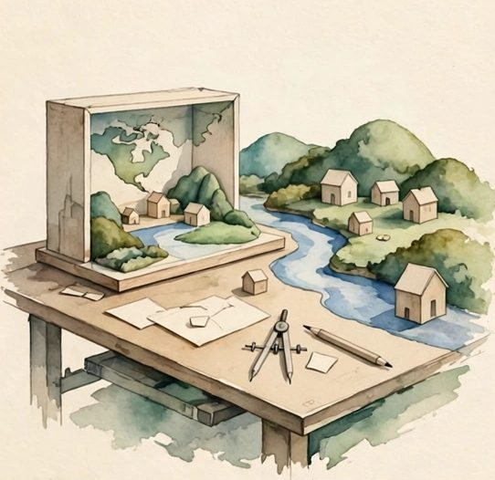
A half-built miniature world on a drafting table: small green hills, a strip of blue river, tiny unpainted houses.
On the drafting table at the end of the building room stands a world that is not finished, and is not meant to be finished soon. Its hills are green and no higher than a hand. Its river is a strip of painted blue that stops, honestly, where the painting stopped. Its houses are small and unpainted, because the builder has not yet decided what color a morning should be there. The keeper regards the model the way one regards a first sentence: not as a claim about the whole book, but as proof that the book has genuinely begun.
Nothing about the model is grand, and the house prefers it that way. A perfect world, as this hall keeps the phrase, is not a prize displayed under glass. It is a country under construction, imagined honestly and built patiently, one valley and one street at a time. The materials are humble — paper, paint, pencil, patience — because the subject is not humble at all, and the register distrusts any workshop whose tools are more impressive than its attention. What is being built here deserves slow hands. The work is the meaning, and it is enough.
Visitors sometimes ask whether the world on the table will ever be real, and the keeper answers with the house's plainest courtesy: that is not the question the table was built for. The question is what the building shows. A person who has drawn their perfect world carefully knows, by the end of the drawing, what they actually value — which mornings, which neighbors, which kinds of quiet. The model stays on the table, unfinished on purpose, doing its real work in the open. The register keeps the model in view of the door.
2The House of the Unbuilt World
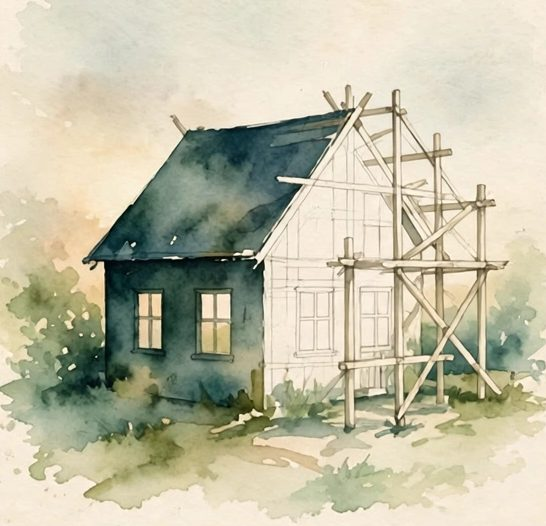
A house with one wing still sketched in faint pencil lines, light wooden scaffolding standing against it.
The house on the edge of the estate is under construction in the same way the world inside it is: one wing stands finished, roofed and lamplit, and the other exists as pencil lines on a board and light scaffolding against the wall. Visitors sometimes ask when it will be done, and the keeper answers that the question misunderstands the building. A house for an unbuilt world is not waiting to be completed. It is arranged to be worked in — a place where imagining is done with the hands, in the presence of weather.
Its rooms are plain. There is the drafting room, the register room, a kitchen where the keeper takes tea standing at the window, and a corridor of pinned drawings that grows longer every year. Nothing in the house is precious. The value of the place is that it exists at all: a fixed address for a country that has no other location, a door at which questions about the imagined world can be left, and answered, or honestly left unanswered for a season. Correspondence arrives from every kind of weather the subject attracts.
The estate insists that the house be kept in good repair, because an imagined world hosted in a neglected room tends to become an excuse rather than an exercise. The lamp is trimmed. The plans are rolled and labeled. The scaffolding is checked after storms. What the house offers a visitor is not a vision but a sight: someone building slowly, in the open, with ordinary tools, and declining to call the work either finished or futile — a posture the register recommends for most undertakings. The scaffolding, the keeper says, is part of the architecture now.
3A World Begins as a Thought
Before there was a model or a map or a single named street, there was a sheet of paper and one line drawn across it, and the line was not yet a road or a river or a border. It was only a mark that said the world will be arranged somehow, and the arranging has begun. The keeper keeps that first sheet in the register, ahead of all the detailed plans, because every honest building project she knows of started exactly this way — not with a vision complete in all its parts, but with a thought that refused to leave.
A thought is a small site to build on, and the house treats it with respect rather than embarrassment. Thoughts are where the ground is first tested: does this matter, does it matter enough to return to tomorrow, does it survive being looked at in plain daylight. Many first lines are rubbed out, and the register records the rubbings without judgment. A world that cannot survive its own first thoughts is better stopped at the sheet than carried expensively into timber and thatch. The sheet remembers every version of the country it nearly became.
What the keeper protects, in these early rooms, is the slowness of the beginning. A world begun as a thought should be allowed to remain a thought for a while, turning over, gathering weight, refusing to be hurried into a slogan. The imagined country in this hall was a thought for a long time before it was a model, and the keeper believes the country is sturdier for it. Beginnings are load-bearing. They deserve their season, the way foundations deserve dry weather and time. Nothing in this hall is allowed to skip its beginning.
4The Keeper of the Unbuilt World
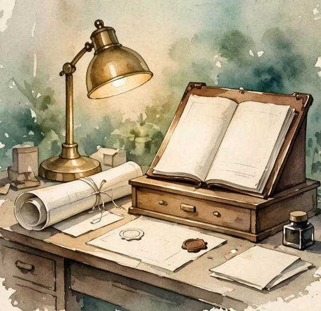
A keeper's desk with rolled plans, a brass lamp, and an open register with blank pages.
The Keeper of the Unbuilt World keeps the register, answers the correspondence that arrives at the Drafting Desk, and has no finished world to show anyone. The keeper's qualification, if it can be called one, is a long habit of imagining carefully: what the ground is, what the weather does, who lives there, and what the whole arrangement costs the people inside it. The handwriting is unhurried. Some pages are dense with streets and customs; some record a whole season in a single decision about a river. Some entries are kept under a paperweight shaped like a hill.
The keeper's work is mostly refusal, performed politely. The keeper declines to promise that the imagined world will ever exist, declines to sell shares in it, and declines — most firmly of all — to use it as a stick to beat the real world with. What the keeper does instead is keep the blueprint honest: marking what is known, what is guessed, and what has been left blank because no honest answer has arrived at the desk yet, in a hand anyone may read. The refusals are recorded in the same ink as the approvals.
The keeper's own perfect world, as recorded in the register, is unremarkable to read and apparently entirely sufficient to imagine: rain kept rather than cursed, streets built for walking, mornings nobody sells. The desk is open to anyone who writes. The house keeps no list of those who never write, and draws no conclusion from their silence. The register simply continues, page after page, in the belief that an honestly imagined world is worth more than a loudly advertised one. The lamp burns on either way, over finished and unfinished pages.
5The Drafting Desk
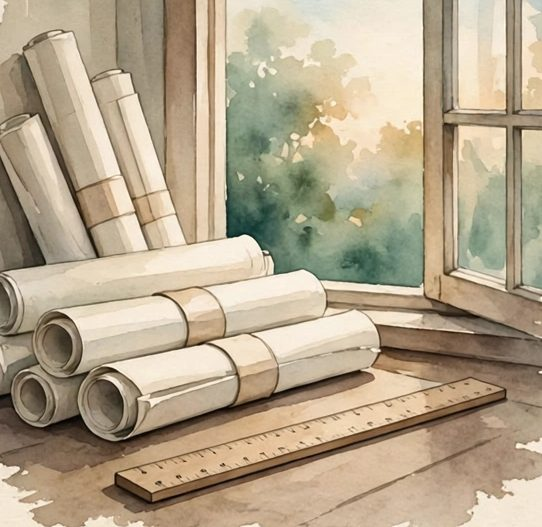
Rolls of blank drafting paper and a long wooden ruler on a table beside a window.
The Drafting Desk stands by the window of the building room, where the light is good for most of the day, and it is the true center of this hall. On it lie the rolls of blank paper, the long ruler, the register, pencils worn to different lengths by different kinds of work. Everything the imagined world becomes passes across this surface first, in pencil, where it can still be corrected. The keeper is particular about the desk's order, not from neatness of temperament, but because a clear desk is where unclear thinking shows itself soonest.
Work at the desk follows a plain rhythm. First the sheet is squared to the table's edge. Then the ground is drawn, before any building is allowed onto it. Then the weather is considered, then the people, then the streets they will need. Correspondents who send in their own world-plans are gently asked the desk's questions in the desk's order, and many write back that the order itself did half the work — that a world imagined ground-first argues back far less than a world imagined rooftop-first. The order is written on the wall where tired builders can see it.
The desk is also where the world is allowed to rest. Not every day at it is a building day. Some afternoons the keeper only unrolls an old plan and looks at it the way one looks at a photograph of a younger self: with affection, and with no wish to move back in. The imagined world is not a debt. It does not stand over the desk demanding progress. It waits, in its rolls and registers, for the next honest hour of work. The rolls do not diminish while they wait for their turn.
6Imagined Is Not Escaped
The window of the building room is kept open in all but the worst weather, and through it come the sounds of the actual street: carts, voices, somebody's arguing, somebody's music. The keeper insists on the open window because this hall holds a firm doctrine on the point: an imagined world is not an escape from the real one. It is a way of looking at it. The world on the drafting table is built from what the builder finds missing, broken, or precious in the world outside the window, and it loses its meaning the moment the window is shut.
Escape has its own honest uses, and the house does not sneer at them — a story taken to bed, an idle half hour on a train, an evening spent inside someone else's century. But those are visits. This hall is about building, and building is accountable work. The imagined country must answer to the real one at every point: its rain measured against real rain, its customs against real neighbors, its kindnesses against the kindnesses actually missing from the street below the window. The street, indifferent and instructive, goes on supplying the evidence daily.
So the register keeps a standing question at the head of every new section: what does this show about here. A world with quieter mornings asks what makes the real mornings loud. A world where evenings are defended asks who, in this one, keeps stealing them. The imagined world, used this way, is less a refuge than a lamp carried back into the house one actually lives in — and the keeper would rather have the lamp than the refuge, every time, without exception. The window stays open while the lamp is lit inside.
7Perfect Is a Working Word
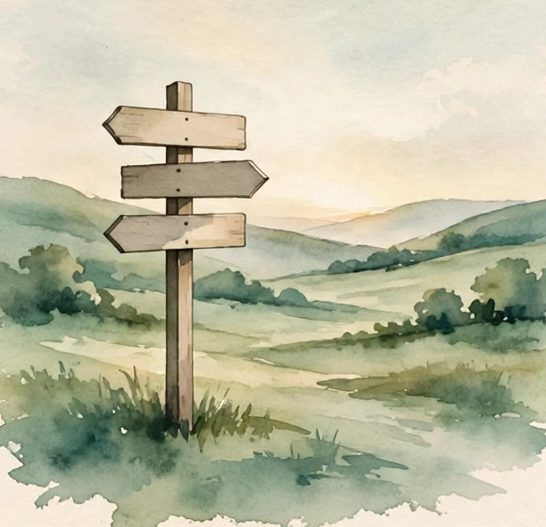
A plain wooden signpost at a crossroads in an empty green landscape, its boards blank.
At the crossroads below the building room stands a signpost whose boards the keeper has deliberately left blank, and it is this hall's emblem if it has one. A signpost with the distances painted in would belong to a finished country. This one belongs to a country still being decided, and its blank boards say something the register repeats in many forms: perfect, in this house, is a working word. It does not describe a place that has been achieved. It describes the direction of the work, and the standard the work is quietly held to.
A working word earns its keep by being used carefully, the way a joiner uses the word true — not as praise, but as a question asked of every edge: is it true yet, is it true here, where does it leave the square. Perfect used this way stops being a boast and becomes an instrument. It asks whether the imagined street is actually walkable, whether the imagined custom actually holds at a tired hour, whether the imagined weather has been allowed to be weather at all. The register tests every new room against that plain question first.
The keeper warns visitors against the other use of the word, the finished use, in which perfect means beyond improvement and beyond argument. That use builds nothing; it mostly sells things, and it breaks the hearts of people who compare their real streets to it. The boards on the signpost will be painted one day, perhaps, when the country underneath them has earned its distances. Until then they stand blank in the green landscape, pointing in several directions at once, all of them still open. A direction honestly kept is worth more than a destination loudly announced.
8Built in Details, Not Declarations
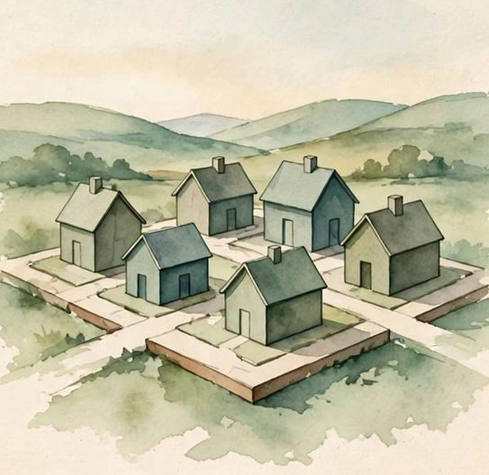
A small model village on a board, each house a different muted color, its streets unfinished.
The model village on its board in the drafting room has houses of many muted colors and streets that stop, mid-block, where the builder's certainty stopped. It is the house's favorite teaching object, because it demonstrates in painted wood what the register argues in prose: a world is built in details, not declarations. Nobody ever built a country by standing at a podium and announcing its values. Countries — even imagined ones — get built the slow way: this street, this bench, this custom about cups, this rule for the hour after supper.
Declarations are not forbidden at the Drafting Desk; they are simply filed where they belong, which is at the back, in pencil, after the details have been given their chance to disagree. Again and again a fine-sounding declaration has been quietly dismantled by a single honest detail — a world declared kind, whose streets gave the old nowhere to sit; a world declared free, whose mornings had been sold before breakfast. The detail is the audit. The register trusts it completely, and checks every grand sentence against one small street.
So the work proceeds at the speed of small things. One ordinary day arranged entire. One street built completely, lamppost to doorstep. One law written plainly enough for a child to recite. The model village grows a finished corner at a time, and its unfinished streets are not an embarrassment but a record: here the builder knew, and here the builder did not yet know, and was honest about the border between the two — which the keeper considers the most useful border in the whole design. The board is large, and the village is in no hurry on it.
9A World Is Not a Room
Early in every builder's work there comes a temptation the keeper recognizes on sight: to imagine not a world but a room. A room is manageable. In a room, everything is arranged for one person's comfort — the chair at the right height, the light at the right angle, the door shut against weather and interruption and other people's opinions. The model on the drafting table began, if the register is honest, as a room: one valley, one cottage, one inhabitant, everything pleasing. It did not stay a room for long, because a room is not what the builder actually wanted.
The test the keeper applies is simple, and it is applied early, before the plans grow fond of themselves. Does anything in this world happen that the builder did not arrange and would not have chosen. Is there weather that inconveniences the hero. Are there neighbors whose evenings are their own. A world that fails the test is not wicked; it is merely smaller than its name. It is a refuge with scenery, and the register files it under refuges, which are respectable things — so long as nobody calls them countries.
A world, by the house's definition, is what continues while its builder is looking elsewhere. It has its own weather, its own stubborn inhabitants, its own mornings that begin without permission. That is what makes it worth imagining in the first place: it is large enough to be discovered rather than merely decorated. The little wooden house with the lifted roof is kept on a shelf as a reminder of the difference — charming, complete, and far too small to hold a whole honest imagination. The shelf stands near the door, where leaving builders will see it.
10Other People Live There
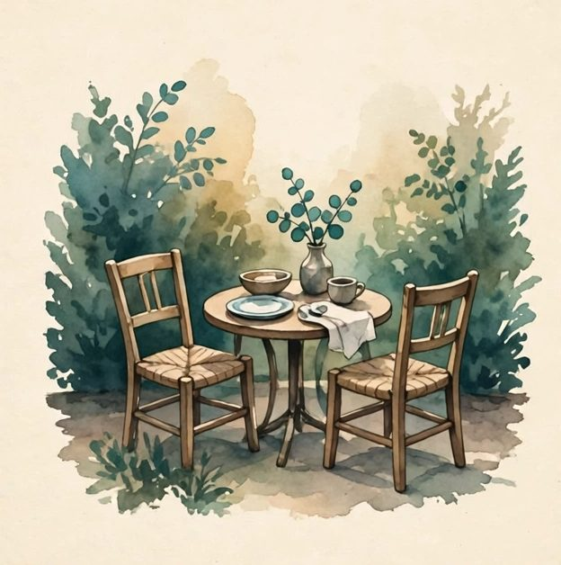
Two chairs facing each other across a small table, one extra place set.
The table in the building room is set, at the keeper's standing instruction, with one place more than the company expected, and the extra setting is the whole doctrine of this room in china and cutlery. Other people live in the imagined world. Not guests of the builder's imagination, not figures arranged to admire the scenery — residents, with their own houses, their own hours, their own uninvited opinions about the builder's blueprint. A perfect world arranged for one person alone is a room, and this hall has already dealt with rooms.
Admitting residents changes the work at the Drafting Desk in ways no builder finds comfortable at first. Streets must serve people whose errands are unknown. Customs must survive being practiced by the tired and the difficult as well as the agreeable. The beautiful quiet square will be used, some evenings, for an argument; the defended evenings will sometimes be given, by their owners, to noise and company. The register records the builder's first attempts to plan all of this away, and records, without satisfaction, their failure. The plan book grows heavier, in pencil, with every such admission.
What replaces the planning is something the keeper calls hospitality at the scale of a country: building streets wide enough for other people's lives to pass in, and then letting them pass. The imagined world becomes less perfect by the podium's measure and more perfect by the house's. It has residents now. Their chairs face the builder's across the table, and the conversation — like the extra place at it — was never set out for decoration. It was set out because someone was actually coming. The chairs were bought secondhand, and have outlasted three blueprints already.
11The Blueprint Is Not the World
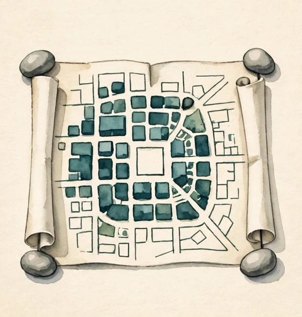
An open plan of an imagined town, weighted down with stones, its corners curling.
The great plan of the imagined town is kept flat on the table under stones, because its corners curl — and the keeper values the curling, as a standing reminder that the plan is not the country. A plan can be finished. It can be measured, admired, framed. It can also be wrong in every particular while remaining beautiful, because nothing on paper has yet had to bear weight, shed rain, or survive a February. The world, when it exists, will have mud in its streets. The blueprint has no mud. That is the whole difference, and it is not a small one.
Correspondents sometimes write in some distress because their imagined world, so clear in the planning, dissolves whenever they try to walk through it in the mind — the street that connects nothing, the custom nobody would keep, the river flowing uphill through the market square. The keeper replies that the dissolving is the blueprint doing its true work. A plan is an instrument for finding out where the world refuses to exist as drawn. Erasing is not failure. Erasing is the sound the work makes when it is going honestly.
So the stones stay on the corners, and the plan stays a plan: consulted daily, believed never. The register distinguishes carefully, in its margins, between what has been drawn and what has been settled — and the second list is always the shorter and the prouder of the two. A builder who mistakes the drawing for the country will end up defending the drawing against the country when the argument comes. The house keeps its stones heavy and its pencil sharp, in precisely the opposite intention. The stones were gathered from the country's own river, for weight and for reminder.
12The First Rule of Building
Every hall of this house has a first rule, and the rule of the unbuilt world is short enough to be kept whole: imagine honestly, build patiently. Everything in the rooms that follow is commentary on that single sentence. The honesty half of the rule is the searching half — it directs the builder toward what they actually value, and away from borrowed wonders. The patience half is the merciful half. A world hurried is a world faked, and the register can tell the difference at a glance, the way a joiner can tell green wood.
Honesty, at the Drafting Desk, has a specific meaning that visitors sometimes find sterner than they expected. It means the blueprint must be drawn from the builder's real life and real longings — not from advertisements, not from other people's postcards, not from envy of a neighbor's greener imagined country. A world built from envy collapses at the first interior room, because nobody actually wants to live in it, including its builder. The register's early pages are kept as evidence: three abandoned worlds, each one somebody else's, each one beautifully drawn and quietly airless.
Patience has a specific meaning too, and it is not slowness for its own sake. It means the world is allowed to be unfinished in public — streets ending at the edge of knowledge, boards on the signpost still blank, whole provinces marked as the far country and left alone. The keeper asks new builders to write the rule at the top of their own first sheet. Most report that the sheet behaves better underneath it: fewer declarations, more details, and a country that begins, at last, to feel like somewhere.
13First the Ground
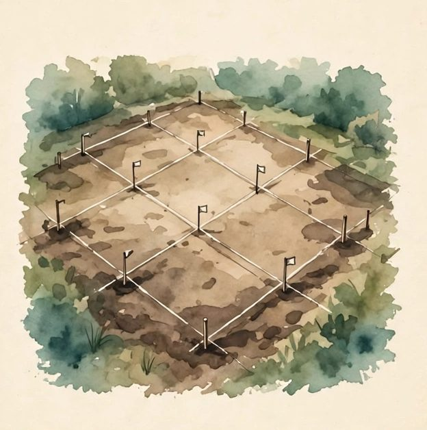
Bare earth marked with survey stakes and string lines where streets will run.
The second hall of the house begins where every actual country begins: underfoot. The first act of building, in the register's order of work, is not a building at all. It is a walk across bare earth with stakes and string, marking where streets might run and where they must not — where the ground falls away, where the water gathers, where the old trees stand. Visitors eager to begin with towers are taken on this walk first, and some are disappointed by its pace. The keeper is unmoved. A world begun at the rooftops will be revised at the foundations, at ten times the cost.
Ground, in this house, is not a problem to be solved before the real work starts. It is the real work's first chapter. The slope of the land decides where the rain will argue. The soil decides what the gardens can honestly promise. The distance to the river decides the mornings of everyone who will ever carry water. Builders who treat the ground as a blank inconvenience find their worlds developing a familiar flaw: everything in them is possible, and nothing in them is necessary, and the imagination, given no resistance, slides off.
So the string lines go down before the streets, and the stakes are argued over more than any tower will ever be. The register keeps the surveyor's notes in the front of the book, ahead of the architecture, as a matter of doctrine. What a world is built on determines what it can be built into — its weather, its food, its distances, the whole texture of its ordinary days. First the ground. The house is willing to spend an entire hall on it, and has. The walk is taken again whenever a new builder arrives at the desk.
14The Shape of the Land
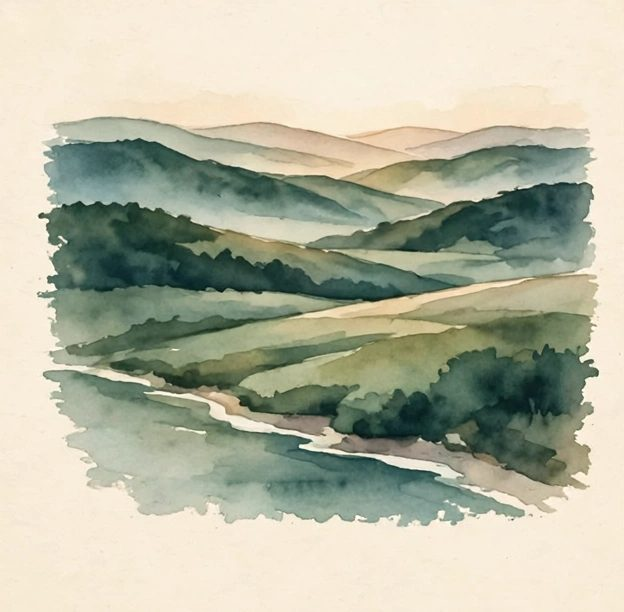
Rolling land laid out in bands, a coast, a plain, a range of hills, seen from a high point.
From the high point above the estate, the keeper likes to say, you can read the whole method of this hall in one look: the land arranged in bands, coast giving way to plain, plain rising to hills, each band with its own light and its own pace. The imagined country is drawn the same way, deliberately. Land that is all one thing — all plain, all shore, all mountain — produces a world that is all one thing, and the imagination, like a traveler, tires of a road that never changes its mind about anything.
Shape is destiny, in geography more than anywhere. A coast makes traders and leavetakers. A plain makes patient farmers and long views. Hills make small valleys, and small valleys make local customs, fiercely kept. When the builder draws the shape of the land, the register notes, they are drawing in advance the tempers of people they have not met yet — the kinds of work the world will need, the kinds of evenings it will make natural. The pencil line that lays down a mountain range is a serious sentence, and deserves a steady hand.
The keeper therefore distrusts land drawn only for beauty. A picturesque ridge placed where it looks well on the sheet, with no thought for the rain it will catch or the road it will forbid, is scenery, not country. The house asks of every band of land the surveyor's questions: what runs off it, what gathers under it, who will have to cross it daily and at what cost. Land that has been honestly questioned tends to answer by becoming the most believable part of the whole design. The high point keeps its view for whoever climbs to ask the questions.
15A Coast, a Plain, a Range of Hills
The country's three great bands are drawn one by one in the register, and each is given its own page, because each will hold a different kind of life. The coast first: a working edge, smelling of salt and weather, where the world ends in one direction and everything arrives from the other. Then the plain, broad and unhurried, where the towns will mostly be, because plains are where people can most easily be numerous and fed. Then the hills, standing at the back of the sheet like elders at the back of a room, saying little, deciding much.
What the keeper insists on, drawing them, is proportion. A country that is all coast has nowhere to be ordinary; every street would smell of departure. A country that is all hills makes an epic of every errand and exhausts its own people before breakfast. The bands correct one another. The coast gives the plain somewhere to trade. The plain gives the hills someone to be high for. The hills give the coast a backdrop of permanence when the sea is doing its worst. The whole arrangement is steadier than any of its parts.
Visitors are shown the three pages and asked a plain question: where, in this country, would you actually live. The answers sort people more honestly than most questions do. Some need the edge and the weather. Some need the broad middle, the markets, the level road to everywhere. Some need the high quiet and the long view, and are willing to pay for both in climbing. The register records the answers without ranking them. A country with three bands has room for all three kinds of citizen — which is precisely why it has three bands.
The Drafting Desk
One desk receives all correspondence for this house — questions, corrections, and word of any world a visitor is building: its ground, its weather, the street they are stuck on. It is read in the order it arrives, and entered in the register of unbuilt worlds.
16Rivers Decide Where Towns Go
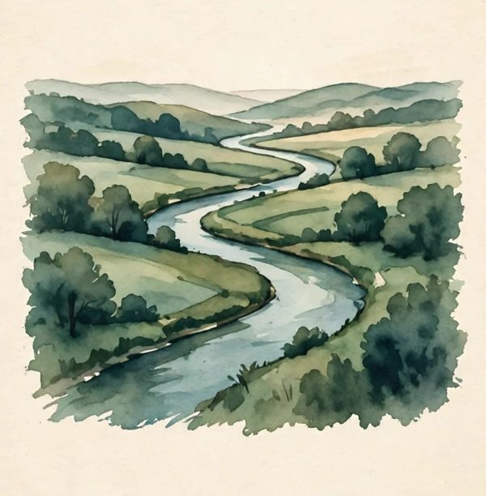
A river bending through green country, a town's future bend following it.
The river on the drafting table is painted blue and stops where the painting stopped, but the river in the register goes the whole length of the country, and it is drawn before any town is allowed to exist. This is the hall's second rule of ground, and it admits no exceptions: rivers decide where towns go. A builder may wish a town upon a scenic hilltop, and the wish may be granted as a castle or a hermitage — but a town, with its mills and markets and thirsty thousands, will be found down by the water, where towns have always been found.
The reason is not romance but consequence. A town is a machine for living, and its fuel is water carried, grain floated, waste taken away, crossings made where the banks allow. Draw the town first and the river second, and the river will be drawn politely, through the wrong places, producing a country that looks well and works badly. Draw the river first — its bends, its floods, its shallow summer moods — and the towns place themselves along it with an almost audible click of rightness, each at its bend, its ford, its mill-race.
The keeper extends the rule beyond geography, carefully, in the register's margin. In a life as in a country, the rivers are the great given currents — energy, affection, time — and the sensible towns are built where the current actually runs, not where the map would look prettier. But the margin note is kept short. This hall is about the imagined country, and in the country the rule stands in its literal form, painted blue, bending through green, with the empty town-sites waiting along it like cups under a tap.
17The Soil Under Everything
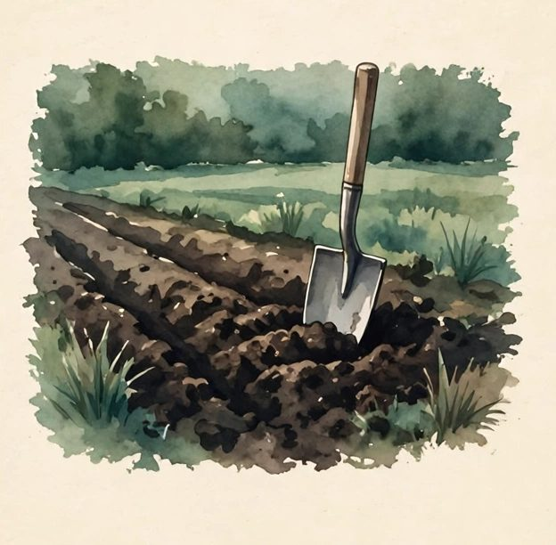
Dark, rich soil in a freshly turned field, a spade standing upright in it.
The spade stands upright in the turned field at the edge of the model country, and it is there because this hall refuses to let any builder forget what everything else stands on. Soil is the least picturesque part of a world and the most load-bearing. A country may be imagined with harbors, festivals, and a constitution of great beauty, and all of it rests, in the end, on whether things grow there — whether the ground gives back more than the seed, whether the gardens answer the hands that work them season by season.
The register's soil notes are practical to the point of rudeness. This field is dark and rich and will grow nearly anything, including weeds at a heroic rate. That slope is thin and stony and will grow only what is patient. The low ground by the river is generous and treacherous in flood years, and the gardens there are planned with the treachery included. Builders who skip the soil pages find their worlds developing a suspicious plenty — harvests without effort, orchards without seasons — and plenty without resistance, the keeper notes, is where imagined worlds go to become dull.
There is also a courtesy in the soil doctrine, and the house states it plainly. The ground of an imagined world is not there to be defeated. It is there to be known, the way a gardener knows a real plot: by season, by failure, by the spade's own testimony. A builder who has imagined the soil honestly has imagined something the whole country can stand on. The rest of the design — towns, customs, evenings — is architecture. The soil is the truth the architecture must fit itself to.
18Forests and Their Edges
Where the fields end in the imagined country, the forest begins, and the keeper draws the border between them with more care than any other line on the sheet. A forest is not a park and not a timber store, though the country will use it gently for both. It is the world's standing reserve of what people did not make: deep shade, unplanned paths, animals following errands of their own, a darkness at noon that reminds the towns, politely, that the world is not entirely theirs to arrange. Its birds keep their own counsel and their own hours entirely.
The edges matter as much as the interior — the keeper is firm on this, because edges are where the two worlds actually meet. Along the forest's edge the country places its woodpiles, its beekeepers, its children learning which berries are which, its solitary walkers going in at dawn and coming out quieter. A hard edge, fenced and forbidden, makes the forest a rumor. A dissolved edge, fields nibbled to nothing, makes it a memory. The blueprint holds the line at a lived-in border: crossed daily, respected always, surveyed by nobody's ambition.
And the forest corrects the blueprint, as all real things in the design are meant to do. It grows back over abandoned clearings without asking. It drops trees across good roads in storm years. It cannot be scheduled, only visited. Builders who want a forest that behaves are advised, kindly, to draw a garden instead and call it by its name. The country keeps this one wild at its center and honest at its edges, because a perfect world with nothing left unplanned in it would frighten the keeper more than any wilderness.
19What Grows There
Rows of young green shoots in tilled earth under early light.
The young shoots are up in the model country's fields in straight green rows, and the keeper walks them the way other builders walk a new street — slowly, counting nothing, attending to everything. What grows in an imagined world is a plainer confession of its values than any of its laws. A country is known by its staple: by what its ordinary people eat on ordinary days, by what the gardens are given the best soil for, by what is stored against winter with the most care. Draw the harvest first, the register advises, and much of the country draws itself.
The choices are recorded without glamour. Grain for the plain, because the plain is what there is most of. Orchards on the slope that catches the morning. Gardens between the houses, because food grown near the door tastes of the door's own weather. Nothing exotic is imported to impress visitors. The imagined country eats what its ground and seasons honestly offer, and its festivals — when this hall reaches festivals — will be built out of that plenty and no other, rather than flown in over it at great expense of credibility.
There is a discipline in the rows, and the house does not hide it. What grows there decides what kind of work the world will ask of its people: heavy harvest labor in its season, long quiet winters of stored things, springs that must not be missed. A builder who imagines the food has imagined the calendar. The shoots in their tilled earth, under the early light, are therefore among the least decorative plates in this hall. They are the country's promise, made in green, that its people will eat — and the keeper walks the rows accordingly.
20The Far Country, Deliberately Unmapped
The edge of a drawn map, where the inked land fades into blank paper.
At the edge of the great plan, the inked land gives out into blank paper, and the blankness is not an omission. It is one of the most considered decisions in the whole design. Beyond the hills, past the last surveyed river, the blueprint declares a far country and then deliberately declines to map it. No roads are drawn in. No towns are named. The keeper has written nothing there but the small, contented admission that the world is bigger than its plan — and that its own builder is not entitled to all of it.
Every finished-feeling world the register has examined made the same quiet error: it mapped everything, explained everything, left nothing over the horizon that the builder had not already approved. Such worlds age badly in the imagination. There is nowhere in them to go. The far country is the design's protection against that completeness — a reserve of genuine elsewhere, belonging to whoever lives there, about whom this hall knows nothing and invents nothing. Its weather is its own. Its customs are not the builder's business, and never will be. The horizon, in this design, is a citizen with full rights.
Visitors sometimes read the blank paper as humility, and the keeper accepts the reading without quite agreeing with it. It is less humility than accuracy. A world worth the name has edges where knowledge stops, and the imagination that fills every corner of its own country with itself has built, once again, a room. The map's edge keeps the country honest at exactly the size a country should be: larger than one person's survey of it, with the paper left blank on purpose, like a chair left empty for whoever comes over the hill.
21Neighbors Across the Border
The imagined country has a border, and across the border — the keeper draws this with some emphasis — there are neighbors. Not enemies arranged for drama, not admirers arranged for comfort: neighbors, with a country of their own, whose version of a perfect world is not the same as this one and is not required to be. Their meadows run up to the fence from the other side. Their smoke rises in the morning from chimneys the builder did not design. The register regards this as one of the healthiest facts in the whole blueprint.
A world with no neighbors is a world that has mistaken itself for everything, and the imagination that builds one ends up talking only to itself. Neighbors keep the country honest at its edges. They trade, which tests the roads. They visit, which tests the customs. They occasionally disagree about the river, which tests everything else. And their mere existence — flourishing, unconvinced, different — is the standing refutation of the idea that the builder's way was the only way a good world could possibly be arranged. The register keeps a whole drawer for what the neighbors have taught.
The gate in the border fence stands open in the design, and the keeper notes the reasons plainly. Borders in an imagined world are not there to make the builder feel defended; they are there to mark where one responsibility ends and another begins. The neighbors across the meadow will correct this country, in time, in ways no internal revision could manage. A wise blueprint leaves the gate for them — unlocked, in good repair, with the path on both sides kept walkable by somebody's ordinary, unrecorded care. Twice a year, by custom, the gate is oiled by both sides together.
22Ground That Asks Something of You
Rocky ground with a narrow path climbing, a walking stick leaning on a stone.
Not all of the imagined country is kind to walk on, and the keeper has refused every suggestion to level it. In the north of the sheet the ground is rocky, the path climbs, and the country's own citizens — when this hall reaches citizens — will curse that road in every generation and use it in every generation, because it is where the high pastures and the far view are. Ground that asks something of you is the design's answer to a suspicion that haunts all perfect worlds: that a country with no resistance in it would bore the people it was built to bless.
The doctrine is easy to state and harder to draw. Ease, universal and uninterrupted, is not a blessing but a flatness; the imagination knows it, which is why every beloved real landscape has its hill, its weather, its stony field. The builder's task is not to remove the asking but to keep it honest — to make the hard ground hard for real reasons, slope and altitude and distance, never for cruelty dressed up as character. The register draws a firm line between a road that is steep and a road that is spiteful.
So the walking stick leans on its stone at the path's foot, where travelers in the design will leave it for the next pair of legs, and the path climbs unapologized into the rocky country. What the ground asks, it also pays: strength in the legs, silence at the top, the whole plain of the world laid out below like the sheet it was first drawn from. The keeper has tested the exchange in imagination many times, across many seasons of the work. It holds. The stick has worn smooth where a hundred imagined hands have gripped it.
23No Land Without Weather Coming
Heavy clouds gathering over an empty landscape, the first weather coming.
The clouds are already gathering on the horizon of the model country, dark over the empty fields, and the keeper points them out to every visitor who has followed the survey this far with approval. This, she says, is the part of the ground no builder may leave out. There is no land without weather coming. The finest slope, the richest soil, the best-sited town are all drawn under a sky that will do what skies do — and a blueprint that imagines the land in permanent noon has not imagined land at all, only a photograph of it.
The ground and the weather are one subject, not two, and the register treats them so from this page onward. The slope decides where the flood will go; the flood decides which slope was a mistake. The soil drinks the rain the hills collect. The forest stands the storms that the plain merely watches from a distance. Builders are asked to read their own drawings with the weather switched on: this street in a downpour, this harbor in the third day of wind, this harvest in the year the rains came late. Much is erased at this reading, and the register counts the erasures as progress.
Nothing in this room is a threat. Weather coming is not the world turning hostile; it is the world being a world, with a sky attached. The country that follows in this hall is designed from the soil upward and the sky downward at once, and the two meet in every roof, furrow, and road it will ever have. The clouds in the plate are the first of them, arriving over empty land, before there is anyone there to be rained on. The keeper finds that order — weather first, complaints later — entirely proper.
24The Ground Is Not a Backdrop
The last room of the ground hall corrects the most common misunderstanding in the whole correspondence at the Drafting Desk: the idea that land is where a world happens, rather than one of the things a world is. A backdrop is flat, passive, and painted once. The ground of the imagined country is none of those things. It erodes. It floods its faithful low fields in the faithful years. It gives better harvests to the side of the valley the builder favored less. It participates, continuously, in everything built on it, and any design that forgets this will be revised by it.
The keeper's evidence is kept in the register's plainest pages. A town sited for its view discovered the view came with a wind that took roofs. A road drawn straight, in defiance of a modest hill, spent a century being walked around by everyone. An orchard planted where the map looked empty flowered beautifully and fruited straight into the frost pocket the survey had noted and the builder had skipped. In every case the ground had filed its objection early, in writing, in the surveyor's notes — and in every case, the objection was correct.
So the handful of turned earth is this hall's honest emblem: the world held in one hand, heavy, particular, smelling of rain, not yet architecture and already decisive. The builder who closes a fist around it knows the size of what the rest of the building must answer to. Ground first, weather coming, neighbors over the fence, and none of it scenery. The country that follows — its days, its streets, its laws — will be built on this handful, and the register will keep checking that the handful was remembered.
25The Weather of the World
A wide sky in several moods over a green plain, light breaking through cloud.
The third hall of the house opens with the sky, because the sky is what every inhabitant of the imagined country will share with every other, every day, without exception. Over the green plain of the design the weather stands in several moods at once — light breaking through cloud in the west, a grey intention gathering in the east — and the keeper regards that variety as the weather's honest portrait. A world gets one sky but never one weather. The builder who understands this early will build roofs, roads, and tempers accordingly.
Weather, in the register's order of work, comes before the people, because the people will be shaped by what falls on them. A country of reliable summers grows one kind of calendar. A country of long winters grows another kind of neighborliness altogether. The keeper draws the climate the way the ground was drawn: plainly, in bands, with its cruelties and its kindnesses both entered in the book. To skip the weather pages is to design a population for a place that does not exist, and then blame the population for the mismatch when it fails to thrive there.
Nothing in this hall treats weather as decoration. It is infrastructure. It decides the pitch of the roofs, the depth of the porches, the contents of the storehouses, the whole grammar of the year. And it does the quietest work of all: it gives the country's people something held in common that none of them controls, a daily subject on which the proud and the humble are equally rained on. The hall takes its time under this sky. There is a great deal of sky to take, and none of it is in a hurry.
26Rain, Kept
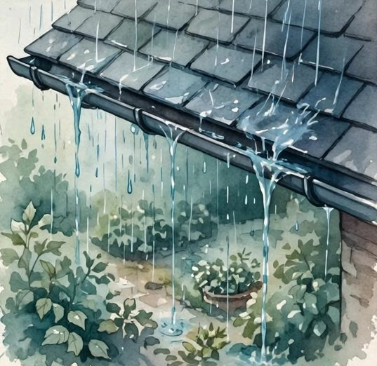
Rain falling on a garden and a slate roof, the gutters running bright.
The rain in the design is not endured; it is kept. It falls on the garden and the slate roof in the plate, runs bright in the gutters, and is caught — in barrels under the eaves, in cisterns under the yards, in soil that has been kept hungry and open for it. The imagined country was drawn in a climate where rain is the difference between a good year and a lean one, and the blueprint honors the fact in hardware: wide gutters, deep stores, roads crowned to shed water to the ditches where the ditch-flowers grow.
Keeping rain is a different doctrine from merely surviving it, and the difference runs through the country's whole character. A place that only endures its weather lives in a low state of siege, and its people learn the siege's tempers. A place that keeps its weather — storing the rain, housing the firewood dry, planting the windbreak before the orchard — lives in negotiation with the sky, which is a much better school. The register notes that most of the country's small technologies are, on inspection, forms of gratitude with handles on them.
The keeper is precise about the limits of the arrangement. Rain kept is still rain: it will rot the neglected beam, swell the river in its year, and find the one badly laid slate on the whole street. The country does not claim to have solved the sky. It claims only to have made a practice of receiving it — gutters bright, barrels ready, gardens grateful. On the drafting table, the painted river waits for the real lesson to fill it: that weather, kept, becomes provision. The barrels stand in a row under the eaves, patient as furniture.
27Winters That Earn Their Springs
The winters of the imagined country are real winters, and the keeper has rejected, in writing, three separate proposals to soften them into a picturesque chill. A winter that costs nothing earns nothing. In the design, the cold months take the year seriously: the ground locks, the roads go quiet, the stores are counted, and the whole country is reduced to what it actually has — its woodpiles, its preserved food, its practiced patience, its neighbors. This is not punishment entered into the blueprint. It is the price of the other three seasons meaning anything at all.
Earn is the operative word in the room's title, and the register uses it in its plainest sense. Spring in the imagined country is not a decoration that arrives on schedule to applause. It is the thaw of specific ice, the reopening of specific roads, the first green in fields that were specifically locked. People who have been cold in a real way receive warmth in a real way, and the country's festivals — when this hall reaches them — keep their footing in that arithmetic. Joy with a memory of winter in it is a different substance from joy that never met one.
The keeper notes, for builders, the temptation this room exists to refuse: the eternal mild season, drawn by people who have suffered winter and sworn their imagined country would never know it. The register understands the oath and declines to honor it. A world without winter has no stored anything — no reserves, no patience, no spring. Its people would be pleasant and untested and, within a generation of imagining, strangely thin. The orchard rows stand bare under the low sun, holding their shape against the cold. The design trusts them to be there at the thaw.
28The Long Light of Summer
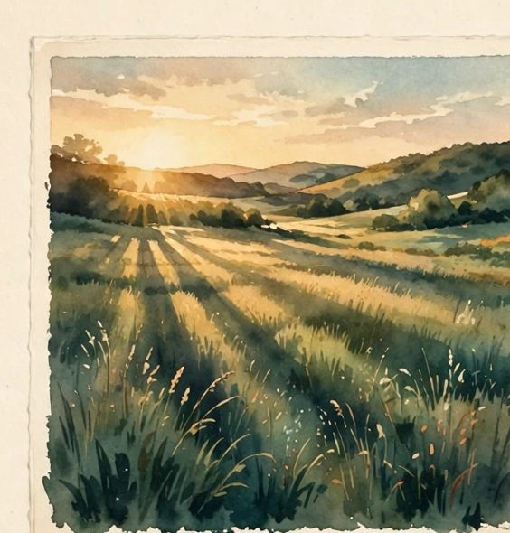
Long summer evening light across a meadow, shadows stretching far.
At the height of the year, the light in the imagined country lasts so long into the evening that the day seems, politely, to have forgotten to end. Shadows stretch across the meadow until they touch the hedges. Supper is eaten in a brightness that feels borrowed. The keeper draws this season among the weather's kindnesses and gives it the hall's warmest page — not because summer is the country's true face, but because a world must contain, somewhere in its year, abundance that arrives without being argued for by anyone.
The long light changes the country's manners, and the blueprint plans for the change rather than merely admiring it. Evenings lengthen, and work that was done by lamplight moves outdoors and turns sociable. The square fills. The old come out to their benches. Children are granted, by general unlegislated mercy, another hour. A builder who imagines only the year's average light misses the fact that a people's character is partly written at its extremes — in how they use a generosity of hours when the hours are given, almost carelessly, in surplus.
And the design keeps the mercy in proportion. The long light is precious in the register precisely because the same sheet holds the locked fields of January. Nobody in the imagined country mistakes June for the whole story; they have the woodpile to prove otherwise, stacked in the same yard where the summer table stands. The keeper closes the room with the plainest entry in the weather hall: the year is a shape, summer is its longest side, and the people there have learned to spend the long side slowly, in company, outdoors, while it lasts.
29Storms Without Malice
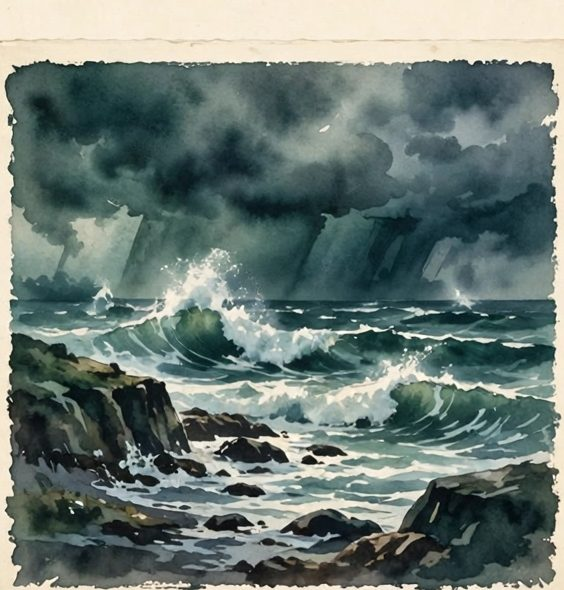
A storm at sea seen from a safe shore, high waves under a dark sky.
The storm in the plate is a real storm — high water under a dark sky, the shore taking its weather standing up — and the keeper keeps the picture in the weather hall for the sake of its entry in the register: without malice. The imagined country has storms. They come off the sea with force, and they do the damage storms do: a harbor chain parted, a roof opened, a week's work at the boats undone in a night. What they do not have, in the design, is meaning. The sky is not angry. The sky is weather, and the distinction is load-bearing.
This refusal is one of the blueprint's quietest kinds of honesty, and it is tested at the drafting table more often than a visitor might expect. Builders, especially builders who have been rained on by life, smuggle punishment into their weather — storms that arrive when the country has grown proud, dry years with morals attached. The keeper erases them without ceremony. A world whose sky keeps score is a world whose people will keep score of each other, watching every misfortune for the fault it must be paying for. The register prefers its weather innocent and its people kind.
What the country builds instead is readiness, which is the adult form of the same conversation. Harbors are doubled in their moorings. Roofs are laid by people who have met the wind before. The morning after a storm belongs, by a custom this house will draw later, to the neighbors of the damaged — a custom much easier to keep in a world where damage is weather and not verdict. The waves in the plate are high. The shore, in the design, is still there underneath them, and so, the register notes with satisfaction, is everyone.
30Fog, and What It Protects
Some mornings the imagined country is not available for inspection. Fog lies in the valley up to the rooftops, the road to the next town is a rumor, and the world has been reduced, by water and still air, to the distance a voice carries. The keeper enters these mornings in the register without complaint, because the design intends them. Fog is the weather's way of giving the country privacy. In a world built to be looked at — and every imagined world is tempted to become a display — a regular erasure of the view is a form of protection.
What the fog protects is specific. It protects the unfinished: the half-built house is nobody's exhibit while the mist is down. It protects the unremarkable: a morning on which nothing can be compared, judged, or turned into significance before breakfast. It protects beginnings, which grow best unobserved, and sorrows, which do too. The keeper has noticed that builders, left to themselves, draw their worlds in perpetual clear weather for the same reason children draw the sun in the corner of the page: because they are drawing for an audience. The fog dismisses the audience, politely and completely.
By midday, usually, the valley returns — the rooftops first, then the roads, then the long view restored like a lamp uncovered. Nothing has been lost by the hours of not seeing, and the register argues that something has been kept. A country that can be hidden from its own builder, on a regular schedule, by nothing more dramatic than still air, is a country with an interior. The towns in the plate are in there, entire, under the fog. They do not need to be visible to be going on with their morning.
The Drafting Desk
One desk receives all correspondence for this house — questions, corrections, and word of any world a visitor is building: its ground, its weather, the street they are stuck on. It is read in the order it arrives, and entered in the register of unbuilt worlds.
31The First Frost, Expected
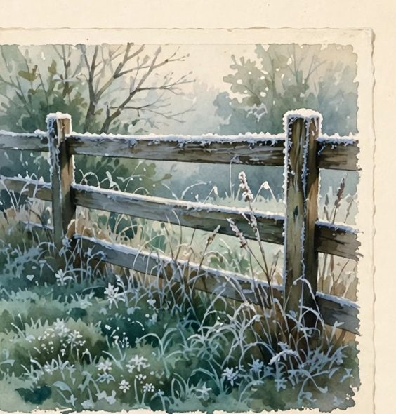
First frost silvering a wooden fence and the grass below it.
The first frost comes to the imagined country as an appointment, not an ambush. It silvers the fence and the grass in the plate, on roughly the morning the almanac in the register said it would, and the country is ready in the unglamorous ways readiness actually looks: the tender plants already lifted or covered, the pipes known by name, the last of the harvest in. Expectation is this hall's whole point. Weather only becomes a catastrophe, in a world or in a life, when it arrives at a door that refused to believe in it.
The keeper draws a distinction the register keeps underlined. Expecting the frost is not dreading it. The people of the design do not spend the autumn flinching. They spend it finishing — which is a different posture entirely, brisk and even cheerful, the posture of a household putting its affairs in order before a guest whose ways are known. The frost, for its part, keeps its own appointments honestly. It does not come in August to punish the hopeful. It does not skip a year to reward them. It arrives, white on the fence, on its morning.
And there is a beauty in it that the people are free to enjoy precisely because they are prepared. Frost at dawn is the year's first calligraphy, fine on the grass, exact on every leaf edge, and it is wasted on a country scrambling in the dark with blankets. The design's small mercy is this pairing, entered in the register as doctrine: prepare plainly, then look properly. The silvered fence in the plate stands in the early light doing nothing but being beautiful, at a temperature the country already knew was coming.
32Seasons Turn Without Permission
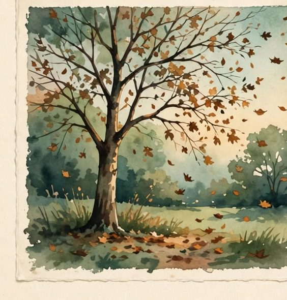
A bare tree at the turning of the year, late leaves falling.
The bare tree in the plate is not waiting for instructions. Its late leaves are coming down in their own time, in a wind nobody scheduled, and the keeper keeps the picture at the center of this room because it states the weather hall's hardest doctrine in a single object: seasons turn without permission. Not the builder's, not the people's, not anyone's. The imagined country, for all its careful drafting, is drawn around a wheel that turns itself — and the design is better, the register insists, for containing something its maker cannot hold still.
Builders resist this page more than any other in the hall. A perfect world, in the popular drawing of it, is a world held at its best moment — the harvest always in, the light always long, nothing declining, nothing being taken down for winter. But a held season is a held breath. The country that cannot let its year turn cannot let anything in it complete a cycle: nothing ripens because nothing is allowed to finish, nothing rests because nothing is allowed to end. The register's word for such a place is not paradise. It is a cupboard.
So the blueprint lets the wheel turn, and takes its instruction from the tree. Leaves are not a failure of the summer; they are its final, honest work. The country plans around the turning the way its people plant around the frost — not commanding the seasons, but keeping a calendar humble enough to consult them. The keeper's entry for the room is short. The tree stands bare at the year's turning, entire and unembarrassed, and already — though the plate does not show it — budgeted, quietly and completely, for spring.
33Weather Is Not a Metaphor Here
Outside the building room there is a post with a rain gauge and a wind vane on it, and the keeper consults them every morning before touching the register. The instruments are this room's whole argument. In the literature of imagined worlds — and the keeper has read a great deal of it, with sympathy — weather is usually a figure of speech: rain for sorrow, storms for trouble, spring for hope, all of it standing politely for something else. In this country, the register insists, weather stands for itself. Rain is the stuff that fills the barrels or fails to. Wind is what takes the roof.
The refusal costs the design something, and the house is honest about the price. A world whose weather means nothing beyond itself loses a whole instrument of easy significance; its builders cannot arrange a convenient storm to punish a villain or a timely dawn to bless a wedding. What it gains is the only kind of weather worth building under: weather that behaves like weather. Consistent in its laws, indifferent to the plot, measurable by gauge and vane. The people of the country, checking the same sky, get the adult pleasure of living somewhere real enough to be read rather than interpreted.
The keeper keeps the figures of speech for the correspondence, where they belong, and the instruments for the country, where they are needed. A visitor is welcome to find the frost moving and the thaw instructive — the hall has done so itself, in other rooms. But the order of operations is fixed in the register: first the gauge, then the meaning. A world whose rain is real can bear any amount of poetry about rain. A world whose rain is only poetry will leave its people, at the first dry summer, with nothing in the barrels.
34A Climate You Can Dress For
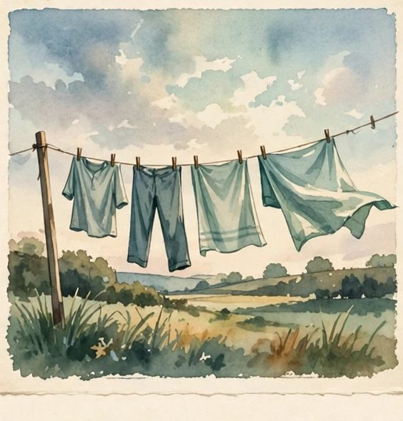
A clothesline of plain garments in a fresh wind under a clearing sky.
The garments on the line in the plate are plain, and every one of them exists because the climate of the imagined country can be dressed for — which is the weather hall's most practical compliment to a world. Dressing for a climate means the climate keeps its side of an old bargain: it is severe in known ways, at known times, by amounts a body can prepare for. Coats are coats, made for actual winters. The line of washing in the fresh wind is a small domestic treaty between a household and the sky, renewed each season, and it holds.
The opposite country appears in the correspondence often enough to have earned an entry of its own: the climate of ambushes, where no garment is right by noon, where the sky's changes are not a rhythm but a series of practical jokes played on the population. Builders draw such places carelessly, thinking variety is the same as richness. The register disagrees. Richness is pattern — cold that can be met with wool, rain that can be met with a good roof and a barrel, heat that can be met with shade and a slow afternoon. A people should be able to grow competent at their own sky.
Competence at the sky is, in the end, what the garments on the line are really displaying. They are not laundry; they are evidence of a population that has read its weather correctly for generations and cut its cloth accordingly. The keeper finds few sights in the whole design more reassuring. A world you can dress for is a world that has agreed, at the deepest level, to be lived in — and its people, hanging out the washing in a wind they predicted that morning, are practicing the oldest form of trust there is.
35The Year Has a Shape
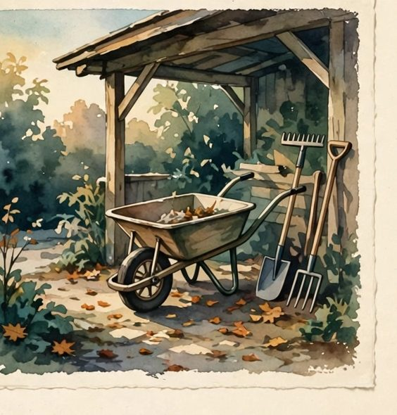
A wheelbarrow and garden tools resting under a shelter, leaves on the path.
The tools are resting under the shelter in the plate because the year, in the imagined country, has a shape, and the tools know their place in it. There is a season for the wheelbarrow's work and a season for its rest, and the distinction is not idleness but design. Lay the country's calendar out flat, the keeper says, and it looks like a hillside: a long climb of spring labor, a high plateau of summer, the descent of harvest, and the flat quiet valley of winter where the tools sleep under cover and the people mend what the year wore out.
A shape is what separates a year from a mere succession. In a shapeless year — and the correspondence contains descriptions of these too, from lives lived under artificial light — one week is exchangeable with the next, and nothing is ever properly finished because nothing is ever seasonally due. The imagined country refuses the exchange. Its people plant when planting is due and stop when stopping is due, and the stopping has the same authority as the starting. The register regards this as weather's deepest gift to the design: not rain or light, but a rhythm large enough to organize a life around.
The shape also holds the country's memory. Because the year turns in form, its events find their shelves: the storm belongs to the autumn page, the frost to its appointed morning, the long light to the top of the summer. An old person in the design can locate a happening by its season the way the keeper locates an entry by its page. The tools under the shelter are part of that filing — at rest, in their season, under leaves nobody has swept yet, entirely where the shape of the year says they should be.
36Bad Weather Days Are World Too
The weather hall closes on a grey day, deliberately. Rain has set in over the model country with no intention of performing; the light is the color of dishwater; the lamp above the drafting table has been lit since morning. The keeper insists on ending here because every imagined world she has ever examined in the correspondence cheated at exactly this point — it stocked its year with significant weather, golden or dramatic, and quietly omitted the plain bad days, the ones that are neither beautiful nor dangerous but merely wet, cold, and in the way.
The omission seems harmless and is not. A world of only meaningful weather teaches its people — and its builder — to expect every day to justify itself, and ordinary days cannot bear that prosecution for long. The grey day asks nothing and accuses nobody. It is the day the mending gets done, the letters get answered, the soup gets made from what is in the house. Much of any real life is lived at exactly this light level, and a blueprint that has no room for it has no room, in the end, for the life it claims to be sheltering.
So the register enters the grey days in the same hand as the frost and the long light, neither skipped nor underlined. Bad weather days are world too: part of the sky's whole portion, to be dressed for, worked through, and occasionally — the keeper allows, closing the hall — enjoyed in the specific, low, indoor way that only a genuinely unremarkable day affords. The lamp burns over the model village. The villages under it proceed with their small business. The hall of weather is complete, and it is complete because nothing in the sky was left out of it.
37The People of the World
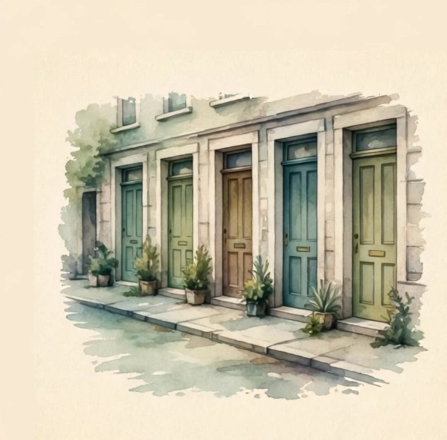
A row of doorways along a quiet street, every door a different color.
The fourth hall of the house opens with a street, because a street is where a world stops being a design and becomes a population. The doorways in the plate stand along a quiet road, every door a different color, and behind every door — the keeper insists the builder sit with this a moment — a household conducting its own affairs on its own schedule, in ignorance of most of the blueprint and cheerful indifference to the rest. These are the people of the world. The design exists for them. It also, from this room onward, exists at their mercy.
The register's first entry on the people is a refusal to summarize them. They are not the workforce, the audience, or the grateful tenants of the builder's benevolence. They are the point and the problem in equal measure: the reason for the streets and the reason the streets will be used wrong; the justification for every custom and the force that will bend every custom out of its drafted shape within a generation. A builder who finds this alarming has understood the hall correctly, and is warmly invited to continue reading it.
What the keeper asks of the design, at the threshold of the people hall, is a change of tense. Until now the country has been drawn in the future: it will have rivers, it will have winters. The people arrive in the present. They are hungry at specific hours, tired by specific work, devoted to specific other people, and entirely unconsulted about the color of their own front doors, which they have painted, each, in a shade the drafting table did not stock. The world has begun. The builder is no longer its only author, and the register's handwriting, from this page, gets noticeably livelier.
38They Are Not Extras
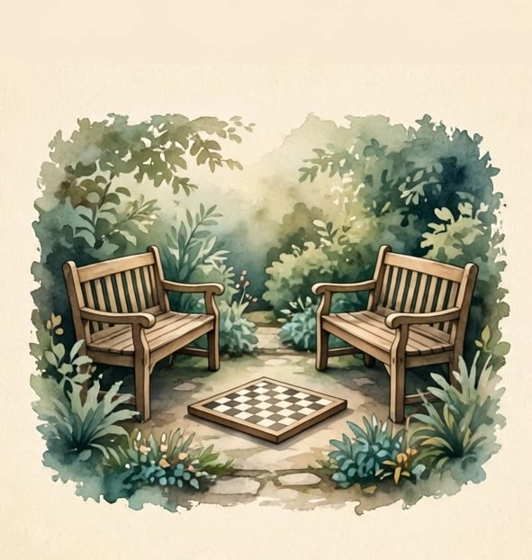
Two benches facing each other in a small garden, a chess board between them.
The two benches in the garden in the plate face each other, and the chess board between them is mid-game, and the keeper keeps the picture where builders will trip over it, because it corrects the single most persistent error in the correspondence at the Drafting Desk. The error is the quiet assumption that an imagined world has one real person in it — the builder, in disguise, living the improved life — while everyone else is furnishing: kindly neighbors, admiring strangers, a population of well-lit figures arranged to make the scenery feel inhabited.
Extras do not play chess. That is the register's test, stated plainly. The people of a real world have games of their own in progress — matches the builder did not start, cannot follow, and will never be told the score of. They have jokes with no transfer value, sorrows that are not lessons, skills that outshine the hero's in categories the hero has never heard of. The moment a builder grants the population its own interior weather, the design changes everywhere: streets become routes between other people's purposes, and the whole country deepens past anything one biography could furnish.
The discipline is harder than it sounds, because the imagination is a monarchy by habit and must be taught, daily, that it has become a republic. The keeper's exercises are unglamorous. Give the chess players names the builder likes slightly less than the hero's. Let the game matter to them more than the builder's visit does. Leave the board mid-game, the outcome genuinely undecided, and walk away from the garden without arranging a winner. The country that results is less flattering and more alive — and aliveness, the register notes, was the entire commission.
39Neighbors, Not Subjects
The two houses in the plate stand across a lane from each other, close enough for neighborliness and far enough for privacy, and they are lit at different hours — which is the whole of this room's doctrine, visible from the street. The people of the imagined world are neighbors, not subjects. The distinction is constitutional, and the keeper has it entered at the head of the people hall in the register's firmest hand. A subject's first relation to the world is obedience to its maker. A neighbor's first relation is proximity to other citizens. One of these produces a court. The other produces a country.
It would be easy for a builder to become a small, well-meaning sovereign: the world exists because they imagined it, and a secret sense of ownership follows the pencil home. The design refuses the throne in specific, practical ways. The people owe the builder nothing — not gratitude, not agreement, not even awareness. Their houses light at hours the builder did not set. Their loyalties run sideways, to each other, in combinations no blueprint scheduled. The register counts every such independence as the design working properly, not escaping from its author.
Neighborliness, unlike subjecthood, has obligations in both directions, and they are the ordinary, load-bearing ones: the fence kept in repair from both sides, the ladder lent without a ledger, the noise forgiven on the understanding that noise will need forgiving in return. A builder who has understood this room stops asking how the world's people will regard its maker. They will mostly not regard the maker at all, being busy across the lane with lives of their own — and that busy indifference, the keeper notes, is the sincerest certificate a world can earn.
40Children Grow Up There
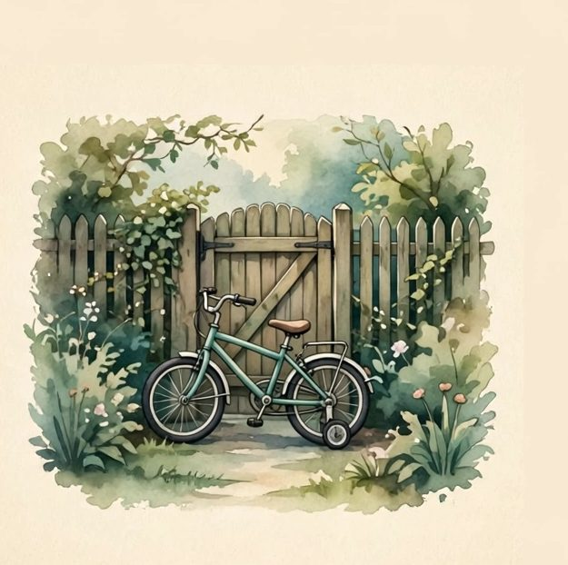
A child's small bicycle leaning by a garden gate.
The bicycle in the plate leans by the garden gate at the exact angle of a child who has just remembered somewhere better to be, and it is the keeper's chosen evidence for the heaviest fact in the people hall: children grow up there. The imagined world is not a place where the young stay young for the scenery's sake. They arrive small, they are loud at the wrong hours, they are bored by the country's finest views, and then — at the speed every parent reports with disbelief — they are taller than the gate, and the world must make room for what they have become.
Growing up is the design's sternest test, because children are the population least consulted by the blueprint and most affected by it. They did not choose the country. They inherit its weather, its customs, its refusals, and the first thing they do with the inheritance — the register records this without alarm — is audit it. Some of the builder's dearest arrangements will not survive the audit. A world that cannot be questioned by its own children, and altered by them, is a monument rather than a country, and monuments, the keeper remarks, are for the dead.
So the blueprint leaves the gate unlatched and the bicycle's owner unplanned-for, in the specific sense that matters: the design holds its customs firmly and its future loosely. The children will repaint doors the drafting table never stocked, ride the good roads to the border and past it, and return — or not — with news the builder could not have imagined, which is rather the point of having built a world instead of a room. The keeper's entry closes the room quietly. The gate swings on its hinge. The country continues, in smaller, growing hands.
41The Old Are Consulted
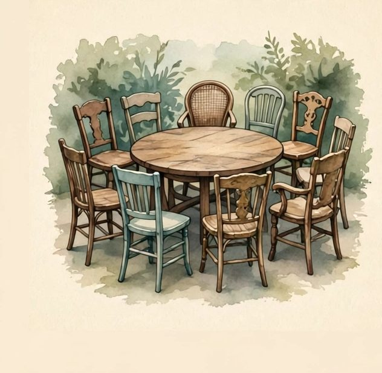
A round table ringed with chairs of many different ages and kinds, each one pulled in close.
The drafting room keeps one piece of furniture that no plan of the world is allowed to move: a round table, ringed with chairs of many different ages and kinds, a kitchen chair beside a carved one beside a stool that has been mended twice. The old sit where they like. Nobody assigns the seats, and nobody times the meeting, because the keeper learned early that the world's memory does not live in its documents. It lives in the people who remember why the well was dug where it was dug, and what the winter of the hard year actually cost.
Being consulted is different from being honored, and the register keeps the two in separate columns. Honor is a wreath hung on a door. Consultation is a question carried across the room and set down in front of someone who has seen the thing attempted before. The old are asked about the bridge because two of them watched the first bridge wash out. They are asked about the orchard because they remember which slope the frost prefers. Their answers are not always followed. They are always heard first, in full, without the young standing up halfway through.
The keeper notes what this does to the room. Decisions slow by exactly the width of one story, and the slowing is not waste. A plan that has survived being told aloud to someone who buried the last version of it comes back to the Drafting Desk steadier than it left. The chairs stay where they are when the meeting ends. The old go home by the lane they chose, at the pace they chose, and the world's new bridge, when it is drawn, has an old person's caution built into its footings like good stone.
42Strangers Arrive and Stay
Strangers arrive in this world the way weather arrives, which is to say without asking the keeper's permission and without being treated as an interruption. The road from the hills delivers them at irregular intervals: a family with a cart, a single traveler with a trade in his hands, two sisters who heard the winters were bearable. The register has a plain page for arrivals. Name, if they offer it. Need, if they state it. Nothing about deserving. The house holds that a world which cannot absorb a stranger is not a world yet, only a household with walls.
What the stranger finds is not a welcome ceremony but a working arrangement. There is a house standing empty because houses are kept ready the way orchards are kept pruned, against a need not yet named. There is work that needs doing, listed at the square where anyone can read it. There is bread at the common table for the first days, without ledger. The keeper is firm that the help be ordinary rather than generous, because generosity ends and ordinary arrangements continue. A stranger can build a life on ordinary. Nobody can build one on being marveled at.
Most of them stay, though staying is not the price of the bread. They take the empty house and repair the part of it nobody else would have thought to repair. Their bread enters the town's ovens, their songs enter the festivals with the names slightly wrong, their children correct the local pronunciation of the river. Years later the register's plain page has become a family's whole history in the town, and the keeper, turning it, notes the arithmetic the house believes in: a world grows the way a table grows, by leaves added at the ends, not by anyone being asked to leave it.
43Disagreement, Housed Comfortably
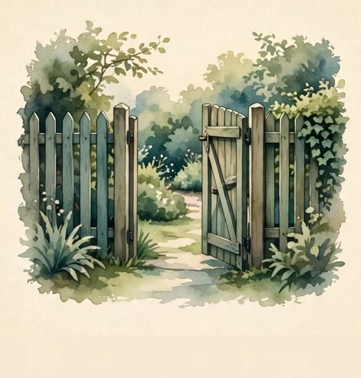
Two garden fences stand side by side with a gate between them, standing open.
Between two gardens in the middle of the town stand two fences, well kept, each clearly marking where one household's ground ends and the other's begins — and in the middle of the fence line, a gate, standing open. The keeper chose the plate for this room carefully. The fences are not the failure of the arrangement and the gate is not its apology. Together they are the whole design: ground that is honestly someone's, and a way through it that is honestly open, so that disagreement between the households can travel on foot instead of by siege.
The people of this world disagree the way gardeners disagree, which is constantly and about real things: where the water should run, whether the mill wants a new wheel this year or next, how the school roof is to be paid for. The blueprint does not attempt to draft the disagreement out of them. It houses it. There is a square with benches where arguments are expected on market days, a custom that the loudest voice speaks last, and the gate in the fence line, which means that after the argument the neighbors still come through to borrow the ladder.
The register observes that comfort is the operative word. A disagreement housed comfortably does not have to pretend to be small, and it does not have to end in embrace. It ends, most evenings, in the practical way: the water runs where the water runs, both gardens get some of it, and the gate stays unlatched against tomorrow. The keeper files the plate under foundations rather than decorations. A world that requires agreement before it can house people has built a theater, not a town. This one has fences, a gate, and people who know how to use both.
44No One Is the Main Character
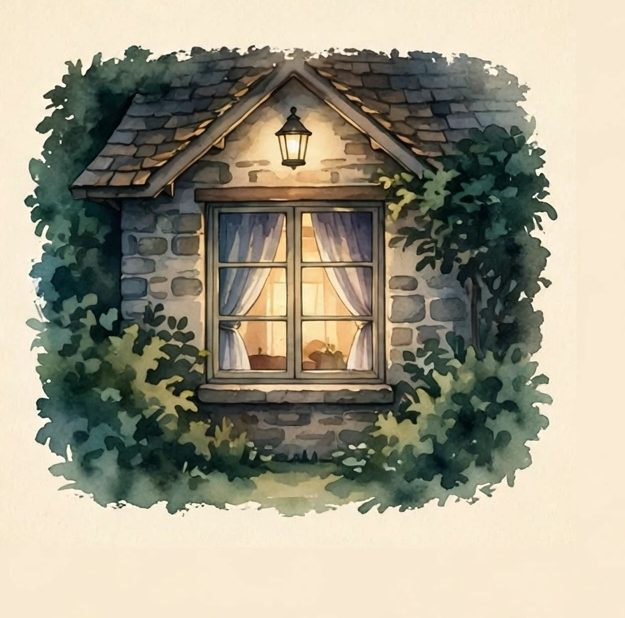
A lamplit cottage window glows in the night, curtains half drawn, warm light held within.
At night the town is a field of lit windows, and the plate the keeper chose shows only one of them: a lamplit cottage window, curtains half drawn, warm light within, somebody's evening going on behind the glass in complete privacy. It is the right picture for this room, because it tells the truth about scale. Behind every window in the town an evening of exactly the same weight is under way. No window is the town's front window. The light does not know it is being observed, and the blueprint does not arrange it to be.
The doctrine sounds simple and costs the builder more than any other in the book. To draft a world where no one is the main character is to surrender the oldest pleasure of imagining: standing at the center of it, in the best house, with the story arranged around one's own importance. The keeper strikes that house from the plans whenever it appears, which is often. In its place the Drafting Desk draws a town where the baker's grief and the mayor's grief are entered in the same size of hand, because in the living of them they are.
What grows in such a world is a particular kind of attention, and the register names it as the world's real wealth. If no life is the story, then every life is worth listening to at full length, the way every window's light is worth the same walk home past it. People stop performing for a center that does not exist. They mend, plant, argue, and rest as the inhabitants of a place rather than the cast of a pageant. The curtains stay half drawn. The light stays warm. The town, unobserved by any author, gets on with being a world.
45Kindness as Infrastructure
The bridge below the town is wide enough for two carts to pass, though one cart at a time would have been cheaper, and the extra width has never once appeared in any account of the town's wealth. The keeper points to it whenever visitors ask where the kindness of this world is kept. It is kept the way the bridge is kept: in the structure, underfoot, used daily by people who never think to admire it. Kindness in the blueprint is not an ornament hung on the world afterward. It is poured into the footings.
So the plans show it in unglamorous places. Benches stand where old legs actually tire, not where they photograph well. The common store lends tools without a deposit because the deposit cost more trust than the tools cost money. The school bell rings at an hour that suits the farms as well as the town. None of this is described in the register as virtue. It is described as maintenance. A kindness that depends on somebody feeling kind that morning will fail by winter. A kindness built into the width of a bridge holds in all weathers.
The keeper is careful about the limit of the idea, and the limit is entered in the same hand. Infrastructure can carry kindness, but it cannot manufacture it, and the world does not pretend otherwise. What the structure can do is make the kind act the easy act: the nearer bench, the open gate, the loan that requires no humiliation to request. People remain free to be unkind, and sometimes are. But they must walk around the design to do it, and most, most days, take the bridge as it was built — wide, unremarkable, and underneath everyone alike.
The Drafting Desk
One desk receives all correspondence for this house — questions, corrections, and word of any world a visitor is building: its ground, its weather, the street they are stuck on. It is read in the order it arrives, and entered in the register of unbuilt worlds.
46People Keep Their Own Hours
Clocks of many shapes cover a wall, every pair of hands set to a different hour.
The clockmaker's wall is the plate for this room: clocks of many shapes, round and square and one like a small house, their hands each at a different hour, all of them ticking in the same room without quarreling. It is as close as the world comes to an official portrait of its people. The blueprint sets no single hour for rising, working, eating, or rest. The baker's day begins in the dark and ends before noon. The watchman owns the night. The scholar keeps hours the farmers regard as a mild form of weather.
This is not a muddle, and the register is precise about the difference. The town has agreements where agreements are needed — the mill wheel turns at stated times, the ferry leaves when the board says it leaves — and beyond those fixed points the hours belong to their keepers. A person's rhythm is treated in this world the way their handwriting is treated: as a fact to be read, not a fault to be corrected. To force one tempo on every trade would be simpler to draft and impossible to live in, and the keeper has stopped apologizing for the complication.
What the different hours give the town is a kind of length. At almost any moment of the twenty-four, somebody is awake and the kettle is on in some kitchen, the lamp lit over somebody's honest work. Travelers arriving at strange hours find the place alive rather than shuttered. The clocks on the wall keep their separate counsel and agree about the only thing clocks must agree about: that time is passing, and passing for everyone, and that no one's portion of it is the standard against which the others are measured and found early or late.
47A World That Lets People Leave
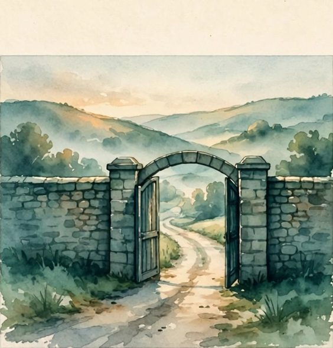
An open gate stands in a long wall, and a road leads away from it into the hills.
The long wall runs along the town's eastern side, built generations back to keep the hill wind off the gardens, and in the middle of it stands a gate that has never had a lock, opening on a road that climbs away into the hills. The keeper chose the plate without hesitation. Of all the sentences in the blueprint, the one this gate illustrates is the one visitors question most: the world lets people leave. Not encourages, not forbids. Lets, the way a house lets a grown child take the road — with bread for the journey and no hand on the collar.
The register gives the reasons plainly, because sentimentality about staying helps no one. A person who cannot leave is not a citizen but a fixture, and a world full of fixtures is a diorama however kind its builder. Leaving is also information. The road out carries word of the town to other towns, and carries back, in the packs of those who return, salt, songs, tools, and corrections the blueprint badly needs. Some who leave never come back, and their empty chair at the table is kept as a fact, not a failure. The gate does not grieve. It stands open in both directions.
What leaving costs the ones who stay is entered honestly in the same page. Hands are missed at harvest. A voice is missing from the choir of ordinary evenings. The world does not pretend the road is free. It only refuses to pay for its wholeness with somebody else's freedom, which the keeper calls the most expensive currency there is. So the wall keeps the wind off the gardens, the gate keeps the road possible, and the town practices the discipline of the open door: to love a place, and its people, without making a cage of either.
48The People Correct the Blueprint
The sheet currently on the Drafting Desk is not clean. It is covered in pencil marks in several hands, whole streets crossed through and redrawn a hand's width to the left, a market hall shrunk, a footpath restored that the keeper had confidently erased. This is the normal condition of the blueprint and the subject of this room. The people who live in the imagined world were never consulted about being imagined, but once living there, in the builder's mind, honestly, they begin to correct the plans — and the honest builder lets the pencil stay in their hands.
The corrections are rarely dramatic, which is why they matter. Nobody demands the river be moved. They point out that the well is too far from the old people's houses, that the square floods where the benches were drawn, that children will cut across the orchard whatever the path says, so the path should go where the children go. Each correction is a small collision between the world as drafted and the world as it would actually be lived in, and the register rules that the lived version wins every argument it honestly makes.
The keeper keeps the crossed-through sheets instead of fair copies, filed in order, because the erasures are the biography of the world's honesty. A blueprint that has never been corrected is a blueprint nobody has tried to live in. By this measure the unbuilt world is in good health: its streets bear the marks of inhabitants who were imagined with wills of their own and then listened to. The final word in the room belongs to the pencil. It lies on the desk, shared property, and the keeper's own hand is not the only one allowed to hold it.
49The Shape of a Day
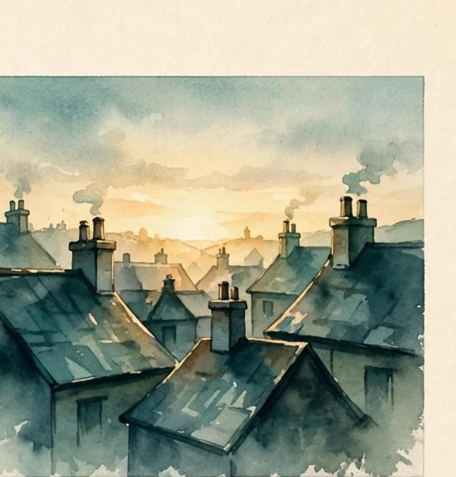
Sunrise comes over the rooftops, the day's first light touching chimneys and slates.
The day in this world begins the way the plate shows it: sunrise over rooftops, first light on chimneys and slates, smoke rising from the houses where the bakers and the early risers have already settled the question of morning. The blueprint gives the day a shape the way a riverbed gives water a shape — not by commanding every hour, but by providing banks the hours run between. There is a beginning that feels like a beginning. There is a middle with weight in it. There is an end that the light itself announces, so nobody has to.
The shape is older than any law in the book and needs none. Work gathers in the hours when work is good: the cool of the morning for the fields, the steady light before noon for the benches and desks. The middle of the day carries the meal, which in this world is an institution with a roof over it, eaten seated, at the pace of conversation. Then the long afternoon slope, the tools put down in order, the lamps. The register notes that a shaped day is not a full day. Emptiness is part of the shape, the way the hollow is part of the bowl.
Visitors sometimes ask who enforces the shape, and the keeper answers with the rooftops. Nobody enforces it. It is kept the way a path across a common is kept: by feet finding it good, year after year, until the grass itself agrees. A person may break the shape whenever their life requires it, and the shape survives their exception, ready again tomorrow. That, the house holds, is what a rhythm is for — not to be obeyed, but to be returned to, like a house with its lamp lit, after every necessary wandering away from it.
50Work That Needs Doing
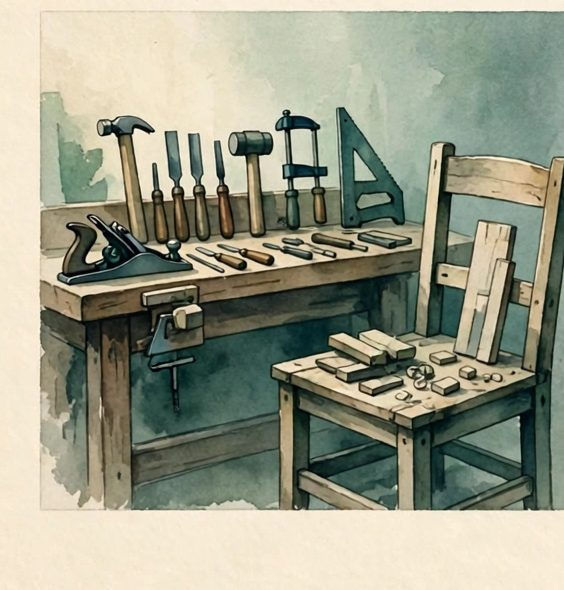
A workbench stands ready, tools laid in order, and a wooden chair half made beside it.
On the workbench in the plate, the tools are laid in order and a wooden chair stands half made, its back still unjoined, waiting for tomorrow's hour. The keeper keeps this picture at the front of the hall of days because it states the world's whole theory of work in one scene. The work here is work that needs doing. The chair is not a symbol and not a product launch; a family at the end of the lane needs a chair, and by the end of the week there will be one, made by hands that know the family's kitchen by heart.
The distinction sounds plain and reorganizes everything it touches. Work that needs doing begins from the need and works backward to the hands; the other kind begins from the hands and goes looking for a need to justify itself, and finds mostly noise. In this world the miller, the mason, the nurse, and the clerk can all answer the same plain question — who is warmer, fed, safer, or less burdened because I worked today — and the register counts that answer, not the hours, as the day's real wage. Tiredness after such work has a clean taste, like water from the right well.
None of this makes the work light, and the house refuses to paint it so. The chair is heavy. The harvest does not consult the harvester's back. Roofs leak in the rain they were built against. What the theory changes is the meaning carried home at dusk: the tiredness belongs to something that can be pointed at, a joined chair, a mended wall, a field cleared stone by stone. The bench is swept, the tools laid in their order for the morning, and the half-made things of the world wait in the lamplight, patient as animals, for hands to return.
51Nobody's Job Is a Punishment
The least loved work in the town is done at the wash-house by the stream, where the linen of many households goes through the same cold water, and the plate of the work would show, if plates could, nothing grand: pegged lines, steam, hands reddened by the morning. The blueprint is tested here more than anywhere, because a world is easily judged by what it does with the tasks nobody would choose. In this one the rule is plain and older than the wash-house roof: no job is assigned as a punishment, and no job is treated as one.
That means the work rotates where rotation is possible, and where it is not, it is honored in the coin the town actually spends: time, help, and standing. The ash-carriers eat at the same table as the council and speak there with the same weight. Nobody's child is threatened with another person's trade as a warning. The register keeps a sharp eye on this, because the keeper knows how easily a world slides into sorting its people by the cleanliness of their hands, and how much quiet cruelty can be built with no worse material than a raised eyebrow.
The honest limit is entered without decoration. Some work is heavy, some is foul, and calling it dignified does not lighten one bucket of it. What the world can do, and does, is refuse to add contempt to the weight. The buckets are carried by people whose names are known, whose days off are defended like anyone's, whose counsel is asked about the stream they work in because they know it best. The linen comes off the line white and ordinary and necessary. So, the keeper writes, does the town itself, washed daily by hands it has agreed never to look down on.
52The Week Has a Rhythm
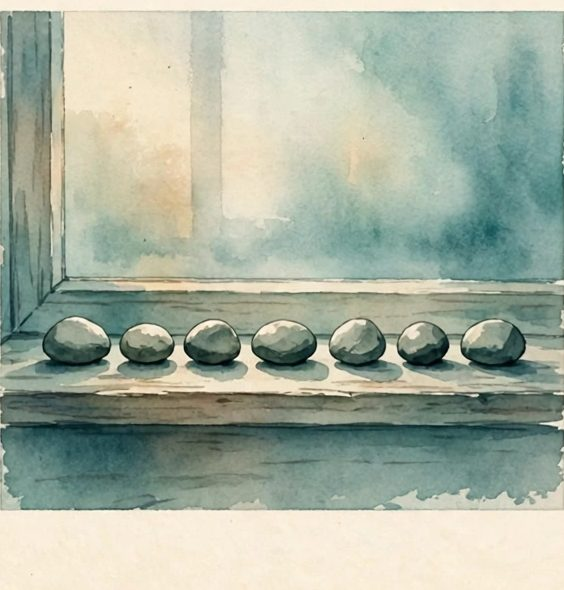
Seven small stones stand in a row on a windowsill, one kept for each day of the week.
On a windowsill in the keeper's own house stand seven small stones in a row, gathered from the riverbank over one summer, one for each day of the week. They are not labeled, and they do not need to be; anyone in the household can read them the way you read a familiar lane. This stone is the market, that one is the long workday, that one — the pale one, worn smooth — is the rest day, which the keeper will argue about with nobody. The week, in this world, is not a corridor of identical doors. It has a rhythm, and the rhythm has a face.
Rhythm is what separates a week from a pile of days. The days here lean on each other deliberately: the heavy work early, while the week's strength is fresh, the errands gathered into one journey instead of seven, the evening of accounts and mending set before the rest day so that rest arrives with clear hands. None of it is law. It is nearer to music — a tempo the town fell into over generations and keeps because keeping it feels like health. Newcomers learn it the way dancers learn a figure, by being gently out of step until they are not.
The keeper defends the rhythm against its two enemies, which the register names without heat: the day that tries to be all work, and the rest that arrives unearned and unmarked, dissolving into the week like sugar in rain. Between them stands the row of stones. A person finishing the seventh day can look back along the sill and see the week entire, each day accounted for, each different from its neighbors, none of them wasted on mere endurance. Then the first stone's turn comes round again, and the hand that moves it is, most weeks, quietly willing.
53Evenings Are Defended
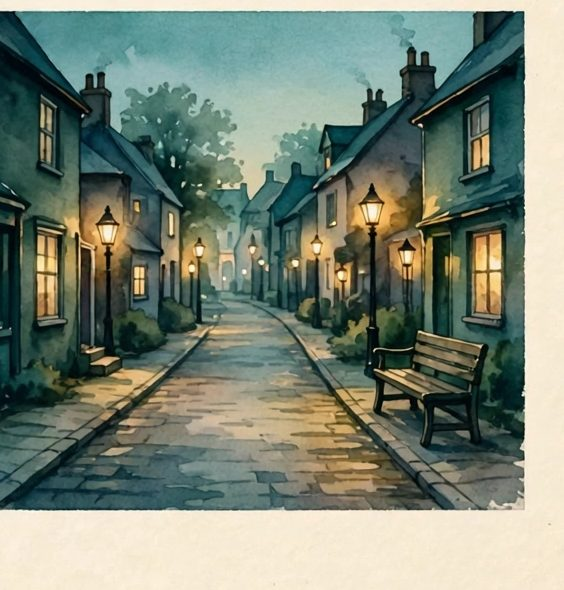
An evening street of houses settles into lamplight, one bench still empty in the quiet.
The plate for this room is the town at the hour the world values most and protects hardest: an evening street of houses, lamps just lit, suppers going on behind the lower windows, one bench empty because its usual sitter is at table and will come out later with his pipe. The evening, in the blueprint, is not the day's remainder. It is a room of the house with its own door, and the door is defended. Work that tries to follow a person through it is turned back the way weather is turned back by a good roof.
The defense is practical, not rhetorical, because evenings are not lost to grand enemies but to small ones: the errand that could have waited, the message sent at the lamp-lighting hour, the habit of carrying the day's unfinished business to the table like an extra plate. The customs of the town stand guard in a row. Shops close while there is still light to walk home by. The council does not sit after supper. Letters arrive on the morning cart. Each rule is minor, and together they build the wall the evening sits behind, unwatched and unbought.
What happens behind that wall is nobody's business, which is rather the point. The register records the forms without the contents: stories read aloud in kitchens, a fiddle practiced badly and improving, arguments about nothing finished with cake, the long sit on the bench saying very little to a neighbor saying very little back. The keeper counts these undefended-looking hours among the most defended things in the world, because they are where its people become themselves again after being useful all day. The lamp burns. The street keeps its quiet. Tomorrow is not invited in early.
54Rest Is Built In, Not Earned
Between two orchard trees at the edge of the common hangs a hammock that belongs to no one and is maintained by everyone, replaced when it frays, rehung when a storm takes it down. It is empty in the plate because it is mid-morning, and the keeper chose the emptiness on purpose. Rest, in this world, is not a prize displayed after the work is finished. It is furniture, placed in advance, in the shade, where the path of the day naturally passes. A person does not apply to the hammock. A person lies down in it, the way a person drinks from the well.
The doctrine underneath is a quarrel with an old and respectable cruelty: the idea that rest must be earned, measured out in proportion to exhaustion, granted only when the accounts of effort are presented and approved. The blueprint rejects the arithmetic entirely. Rest is built in, the way sleep is built into the night and banks are built into a river — not as a reward for the water, but as part of how the water runs without destroying its course. The tired rest. The untired rest less, and nobody audits either of them at the orchard gate.
The keeper notes the consequence the skeptics never predict: a world where rest is unguarded is not a world asleep. The orchard is picked, the roofs are sound, the chair gets finished. What disappears is not the work but the performance of exhaustion by which people elsewhere prove they deserve their evenings. Here the proof is not required, so the energy goes into the work and the rest both, plainly, like a well-kept tool used for its purpose and put away without ceremony. The hammock dries after rain. It waits. It is, the register insists, load-bearing.
55Crafts Outlive Fashions
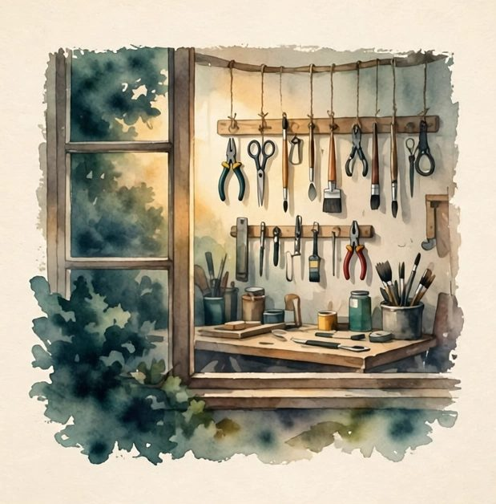
A craft workshop window glows with warm light, tools hanging in rows behind the glass.
The workshop window on the long street has looked the same for forty years: tools hanging in rows behind the glass, lit warm in the evening, the silhouettes so familiar that children navigate by them. Fashions have passed the window like weather — three kinds of chair leg, two of lamp, a brief local madness for painted doors — and the joiner inside has accommodated some of them and ignored the rest with the serenity of a man whose real employer is time. The plate is hung in this room as evidence. Crafts outlive fashions because they are answerable to use, and use changes slowly.
The distinction the register draws is between the made thing and the mood it was made in. A fashion is a mood with a date on it; a craft is a conversation between hands and material that has been running for centuries and is in no hurry to conclude. The cooper does not ask whether barrels are current. He asks whether the staves are true. In this world the trades are taught whole, from the sharpening of the tool to the judging of the wood, precisely so that each generation can survive the decade in which its work is pronounced finished and the one in which it is rediscovered.
None of this makes the crafts solemn, and the keeper is quick to enter the correction. The joiner's window also holds jokes: a chair with one leg deliberately crooked for a customer who wanted it, a carved bird with an expression the whole street recognizes. Play is part of the craft's longevity, the salt in its keeping. What the fashion of the year cannot do is evict any of it. The lamps are lit, the tools hang in their rows, and the hands inside go on learning the old conversation, adding a sentence of their own now and then, in no one's hurry.
56Enough Is a Quantity There
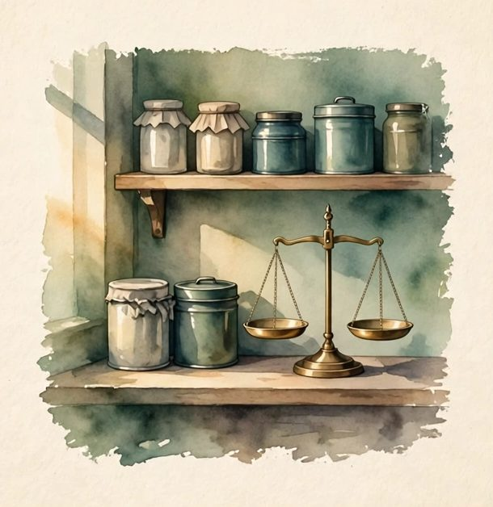
Plain jars and tins stand on a shelf beside a small balance scale, all in good order.
On the pantry shelf in the plate, plain jars and tins stand in a row beside a small balance scale, and everything in the picture has been weighed. The keeper loves the scale's plainness. In this world, enough is not a feeling, a mood, or a sermon. It is a quantity — knowable, measurable, and, once reached, allowed to stop the hand that is reaching. The pantry is stocked to the line the household has learned from its own winters. Above the line is waste wearing the costume of prudence. Below it is anxiety. The line itself is drawn in pencil, and it moves as the household does.
A world that can say enough can do arithmetic that other worlds cannot. It can count the cost of more — in hours, in storage, in the slow corruption of things kept past their season — and enter it honestly on the other side of the ledger. So the second boat is not built, the third field is left to the birds, the workshop closes while there is light left, and nobody calls any of it failure. The register is blunt about the alternative: a world that cannot name enough has quietly agreed that nothing will ever be finished, including its people.
Enough is personal before it is public, and the blueprint respects the order. Each household finds its own line and is not required to defend it at the gate; the balance scale is a household instrument, not a magistrate's. What the town shares is only the permission, renewed by custom, to stop. The jars are washed and refilled. The tins are labeled in the same plain hand year after year. And the scale sits on the shelf among them, not as a judge, but as a reminder that satisfaction, in this world, is allowed to be exact.
57Work Done Where It Can Be Seen
The mender's bench stands in the open, under the lane's one reliable awning, and everything he does all day is done in public: shoes opened like books, kettles turned in the light, the split seam of a sail examined by its owner and two interested strangers. The arrangement is deliberate. In this world, work is done where it can be seen, not because the workers are watched — the register forbids the confusion — but because the sight of work is part of how the town knows itself. A place where all labor happens behind walls begins to believe bread is a natural feature of shelves.
Seeing the work changes the seeing of everything else. The child who has watched the mender coax a boot back to life does not throw away a boot carelessly again. The council that must walk past the road crew's opened trench sets its budgets with cleaner arithmetic. Even the keeper's own work is not exempt: the Drafting Desk stands where visitors can watch a world being drawn badly and redrawn, eraser shavings and all. Competence displayed quietly, without theater, turns out to be one of the strongest cements a town can be built with.
The keeper enters the limit in the same steady hand. Visibility is offered, never extracted; the baker's dawn hours and the nurse's night rounds happen unseen and lose no honor by it. What the custom asks is only that work not be hidden as if it were shameful, and that the town's easy things be known to be somebody's effort. The bench is swept at dusk. The awning drips after rain. Tomorrow the street will pass again, watching the mending the way it watches the weather — as the ordinary, necessary, visible life of the place.
58Nobody Sells the Morning
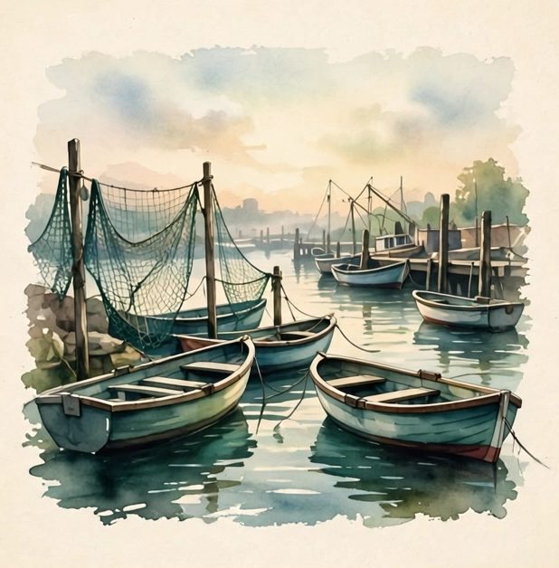
A harbor lies quiet at dawn, small boats at rest and nets drying on their posts.
The harbor at dawn is the plate, and the keeper insists on the hour: small boats at rest on water the color of pewter, nets drying on their posts, the whole working shore standing still in the first light, unsold and unhurried. In this world the morning belongs to the people who wake in it. Nobody sells it back to them. There is no toll on the first hour, no voice raised over the rooftops telling the town what to want before it has had its tea. The day opens the way a door opens, onto whatever its owner intends.
The refusal is structural, like all the refusals that hold. The town's notices are painted on one board, by the square, in a hand no larger than the news requires. The market opens when the farmers arrive and not one bell earlier. What a person thinks about before breakfast is treated as their own ground, fenced like a garden — not because the thoughts are precious, but because attention is the first field a person farms each day, and this world does not allow the best field to be rented out from under its farmer.
By the time the harbor stirs, the morning has done its work. Nets are examined at the pace nets require. The boats go out in their order, which is the order of the tide and not of any competition on the quay. The keeper walks the shore some dawns with nothing in his hands, entering the same note in the register year after year: a town that wakes up owning its first hour wakes up richer than its ledgers show, and spends the rest of the day from that capital, calmly, at its own rate of interest.
59The World Runs Without Being Watched
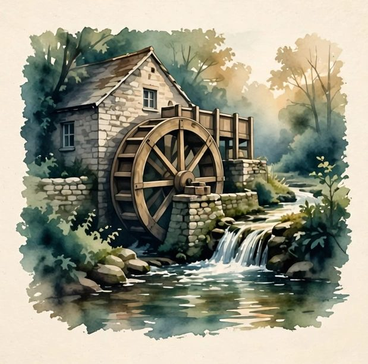
A watermill wheel turns slowly beside its quiet house, the stream doing its work unseen.
The watermill at the town's edge turns its wheel through the night at the same slow pace it keeps at noon, and nobody stands on the bridge to supervise it. The miller sleeps. The water does not. The plate is the keeper's favorite in this hall because it holds the world's most restful doctrine: the place runs without being watched. The mill grinds, the lamps burn down in their order, the night watch walks its round for safety and not for reporting, and the whole arrangement trusts itself to continue in the dark like a heart in a sleeping body.
This trust is built, not assumed, and the register describes the building of it. Things are maintained before they break, so that nobody's vigilance has to substitute for maintenance. Accounts are kept plainly, in books left where the concerned can read them, so that trust does not have to be blind to be generous. And people are known — actually known, at the scale of a town — which does more for the night's peace than any system of watching ever devised elsewhere. The watched world and the trusted world look similar from a distance. Inside, they feel entirely different to live in.
The keeper makes his own confession in this room, because the Drafting Desk is the worst offender. He is tempted, some evenings, to walk the whole imagined town in his mind before sleeping, checking its streets like a landlord. The blueprint corrects him in his own handwriting: a world that needs its builder's insomnia is not finished being built. So he closes the register, leaves the wheel to the water, and lets the town practice the deepest form of readiness there is — being itself, unwitnessed, in the dark, in good working order.
60A Day That Needs No Occasion
The last room of the hall belongs to a day with nothing in it. No festival thins the shops' shelves, no visitor is expected, no anniversary is marked on any calendar in the town. Bread is carried home. A gate is mended because it squeaked. The lane fills with small errands and empties of them again by supper. The keeper chose this day, out of all the days the blueprint contains, to close the hall — because a world is not truly built until its ordinary days are good, and this one, examined closely, is quietly excellent.
The excellence is in the grain, not the events. The bread is good because the baker's ordinary standard is good. The mended gate swings true because the mender was not rushed. The errands cross each other in the lane and produce, unplanned, the day's entire social wealth: news exchanged, a child's height marveled at against a doorpost, an old person's basket carried the last fifty yards by whoever was going that way. None of it would survive being organized. It is what happens in a place whose ordinary arrangements are kind, at ordinary hours, on a day nobody will remember by name.
The register closes the hall with the arithmetic the whole building rests on. A life is mostly such days; a world is entirely such days, with festivals sprinkled like salt. To draft a perfect world and fill it with occasions would be to build a fairground. To build it so that a Tuesday with nothing in it is nonetheless a good day to have lived — that is the work, and the work is nearly invisible, and the keeper, turning the page toward the houses and streets to come, enters the day in the book without underlining it. That is what ordinary means here. It does not need underlining.
The Drafting Desk
One desk receives all correspondence for this house — questions, corrections, and word of any world a visitor is building: its ground, its weather, the street they are stuck on. It is read in the order it arrives, and entered in the register of unbuilt worlds.
61Houses and Streets
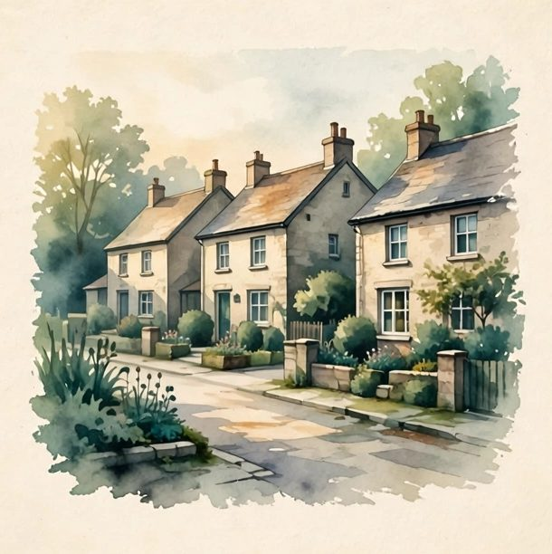
A street of houses stands in morning light, every house with its small garden before it.
The street in the plate is not the finest in the town, and the keeper chose it for exactly that reason: houses in morning light, each with a small garden before it, smoke and washing and a bicycle of no distinction. This hall turns from the people to the ground they live on, and its first doctrine is that houses and streets are one subject, not two. A house is a street's inside. A street is a house's front room. The blueprint draws them in the same sitting, with the same pencil, because a failure in either shows up by winter in the other.
So the houses here are sized to their lives and no larger in the imagination than in the building. Rooms exist because evenings need them, not because a facade required symmetry. The gardens are small because small gardens get gardened; the great lawns of grander worlds exist mostly to be apologized for. And the street repays the modesty by being genuinely a place — wide enough for two neighbors to stop and finish a conversation without blocking the carts, shaded where the summer asks for shade, drained so that the spring rains run somewhere intended.
The keeper warns against the prettiness trap on the hall's first page, in handwriting slightly larger than usual. A street that exists to be admired will fail the people who live on it in some small daily way — a step too high, a corner too sharp, a bench placed for the view instead of the tired. Everything in this hall is therefore tested at ankle height and in bad weather before it is allowed to be beautiful. The morning light in the plate is real. So is the mud it is shining on. The houses stand in both.
62Streets Made for Walking
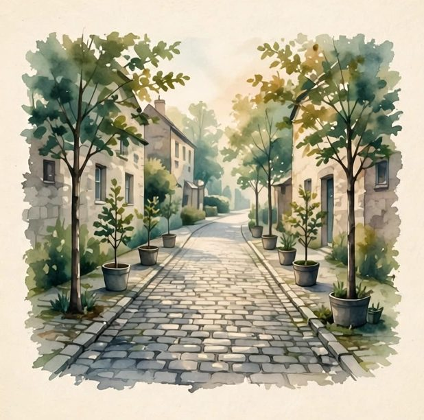
A cobbled lane runs between the houses, made for walking, young trees planted along its length.
The lane in the plate is cobbled the old way, stone by stone, and young trees stand along it at intervals a child could count while walking. It was not built for speed, and the stones say so to every foot that crosses them. This is a street made for walking, in a world that considers walking the natural speed of a citizen. At walking pace a town can be read: who is mending, who is celebrating, whose beans are up first. At any faster pace it becomes scenery, and scenery, the keeper notes, is what a place turns into when its people stop living in it.
So the blueprint protects the pace with simple obstinacy. Distances are kept human: the well, the mill, the school, and the square all stand within the compass of an ordinary errand. Surfaces are kept honest, drained and lit, because a street that is pleasant only in good weather is a part-time street. And the trees are the young ones in the plate on purpose — planted by people who will sit in their shade as grandparents, which the register counts as the lane's real foundation. A street planned for walkers is planned by people intending to stay.
What walking gives back to the town is entered as the hall's plainest fact. Neighbors are met, not passed. News travels at the speed of conversation and arrives with its context still attached. The old keep their legs, the children learn the town by heart one lane at a time, and the stranger on the road becomes a face, then a name, then a fellow citizen of the pavement. The cobbles wear slowly under it all, hollowed a little by generations of feet going about their business — which is, the keeper writes, the only traffic report this world has ever filed.
63Windows Face the Morning
The houses on the long street are set at a slight angle to the road, each turned a few degrees off the strict line, and the reason is written in the oldest page of the blueprint: windows face the morning. The living rooms take the first sun. Kitchens wake in light rather than in lamplight. A person making tea at dawn in this world does it in the company of the day arriving, which sounds like a small thing until it has happened to you ten thousand times, at which point it is most of what a house is for.
The angle costs the street its tidiness, and the keeper records the argument it caused with affection. Surveyors prefer a straight line; it draws well and reads as order from above. But nobody lives above. People live at the height of a window, in the weather of a particular room, and a plan that sacrifices their mornings to its own geometry has confused the map with the country. So the street keeps its gentle irregularity, and visitors who notice it mostly notice that the town feels awake earlier than other towns, without being able to say why.
The doctrine extends past sunrise, as doctrines in this house tend to. Face the morning means arrange the built world toward the day's beginning rather than its display: workrooms lit for work, stairs turned so the descent meets the light, a bench on the east wall of the square that catches the first warmth in March. The register calls it orientation, and ranks it above decoration without hesitation. A house can recover from an ugly door. It cannot recover, in fifty years of mornings, from facing the wrong way. The shutters open one by one. The street begins.
64A Town Square With Benches
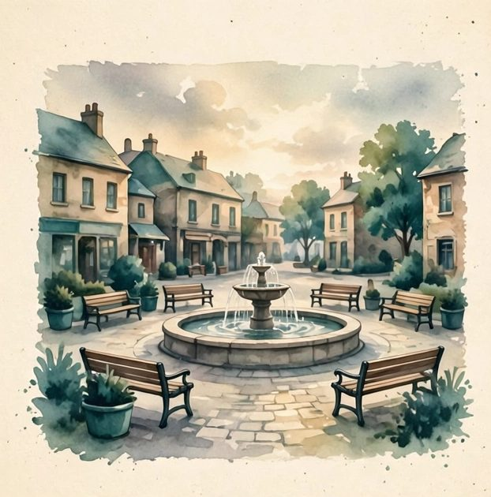
A town square opens in the sun, benches arranged around a fountain at its heart.
At the center of the town the streets widen into the square, and the square's first furniture is not the fountain, handsome as it is, but the benches arranged around it — facing inward, in the sun's good hours and out of the wind's, in numbers that assume the whole town might want to sit down at once. The keeper calls the square the world's front room and the benches its thesis. A town that provides sitting expects staying. Staying produces everything the town is for: gossip, courtship, argument, rest, the long public thinking that no council chamber can do.
The benches are set with a care that visitors mistake for accident. They face each other across conversational distances, not across parade distances. Some stand in the morning sun and some in the afternoon shade, because the old and the young keep different hours and both are expected. None of them is reserved, and the one nearest the fountain — the contested throne of every fine evening — is governed by the square's only law, which is custom: first come, and the previous occupant's warmth in the wood is part of the welcome, not a discourtesy.
What the square refuses is as deliberate as what it provides. No fence crosses it, no charge is made for it, and nothing stands in its middle taller than the fountain, so that the town's center belongs to the town at eye level. Markets fill it weekly and empty it kindly. Festivals borrow it and give it back swept. And on the ordinary evenings, its true shift, the benches fill with the citizens of the hour — people watching the light go, together, in a place built to make togetherness cost nothing at all.
65Doors That Open at Street Level
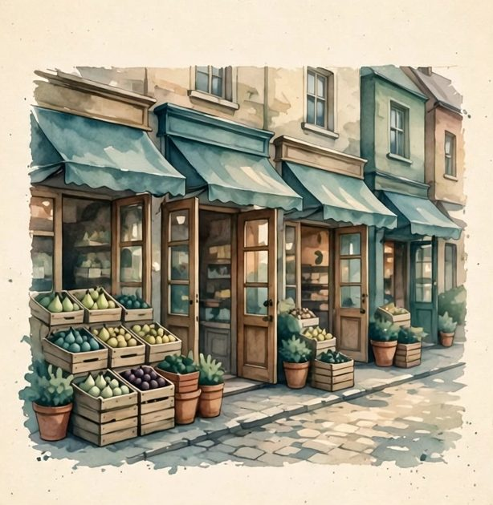
Shop doors at street level stand open along the street, awnings shading crates of fruit.
Along the market street the doors open at street level, directly onto the pavement, with awnings above them shading crates of fruit, and not one of them asks to be climbed to. The keeper walks this street when he wants to check the world's manners, because a door is a manners. It says, before a word is exchanged, whether the house expects you or examines you. In this world the doors sit at the level of the street's own feet: no steps to perform humility on, no raised threshold to announce that inside is higher than outside. You walk in the way weather comes in, naturally.
The arrangement is practical before it is symbolic, and the blueprint insists on the order. Carts and barrows pass through doors that open level. Old legs and short legs and legs carrying sleeping children pass through them. Rain does not pool on a threshold that was never raised above the street's own drainage. The shops keep their goods near the opening because the opening is where the town is, and a trade conducted half in the street belongs to the street in a way the town finds healthy: prices visible, quality examinable, the baker's morning audible two doors down.
Behind the shops the houses follow the same rule, and the register underlines the consequence. A world whose doors open at street level has quietly refused one of architecture's oldest temptations: to sort people by altitude, the important up the stairs and the ordinary kept below. Here the mayor's door and the mender's door stand at the same height off the same pavement, and both open outward, so that entering is easy and leaving is nobody's favor. The awnings fade. The crates are restocked. The doors, all day, keep their simple opinion: come in.
66Small Shops, Slowly Kept
The little shop on the corner has been selling roughly the same things for roughly thirty years, and its counter is worn smooth in the place where two generations of hands have rested while deciding. Nothing about it is efficient, and the keeper, entering it in the register as a load-bearing institution, would not change a shelf. The shops of this world are small and slowly kept on purpose: small enough that the keeper of the shop knows what the street actually needs, slow enough that the knowing has time to happen.
Slowly kept means the stock follows the town's life rather than a distant season's guess. Jars are refilled from the barrel, boxes opened one at a time, the book of credit kept in pencil with many erasures and no interest charged on kindness. A shop like this cannot expand, and the blueprint counts that among its virtues rather than its limits. What it can do is endure: through the thin years it shortens its hours instead of its honesty, and the street, which notices such things, carries it the way it was carried.
The keeper records the small shops' real product, which does not appear on their shelves. It is continuity. The same door, the same counter, the same hand measuring tea across the whole of a childhood gives a street a memory it can touch. Children sent on first errands learn the town's geography by its shops and learn its trust by their credit books. The jars are washed. The boxes are stacked in their plain rows. And the world, which could have had larger shops, keeps the small ones the way it keeps its old trees: as evidence that not everything improves by growing.
67A Library Within Walking Distance
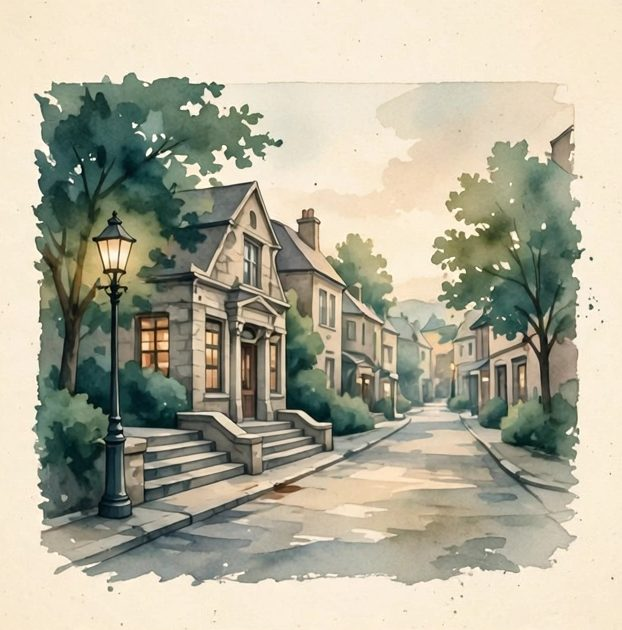
A small library stands at the end of the street, stone steps rising to a lamp above the door.
At the end of the long street, where the houses give way to the lane toward the mill, stands the small library: stone steps, a lamp above the door that is lit an hour before opening, shelves that a determined reader could finish in a decade and no reader is asked to. The keeper chose the plate for its modesty. This is not a monument to learning. It is a piece of the town's furniture, placed by the blueprint's plainest rule: a library within walking distance of everyone, the way a well is, because thirst is thirst.
Within walking distance is the phrase the register underlines, twice. A library across a day of travel is a rumor; a library at the end of the street is a habit, and habits are what a world is made of. The farmer calls in wet from the field and dries by the reading room's stove with the almanac. The child graduates from the low shelf to the tall one at the pace of her own height. Nobody's journey to a book is heroic, which is exactly what makes the books get read.
The collection itself is described in the register without boasting: deep in what the town uses, honest about its gaps, repaired by hand. The books the town has worn out are the catalog's pride, their spines rebacked like good boots. And the lamp above the door, lit early on winter afternoons, does the library's quiet advertising all by itself — a promise at the end of the street that there is a warm room where the whole stored memory of the species is available at walking pace to anyone with dry feet and a question.
68Houses Built to Be Repaired
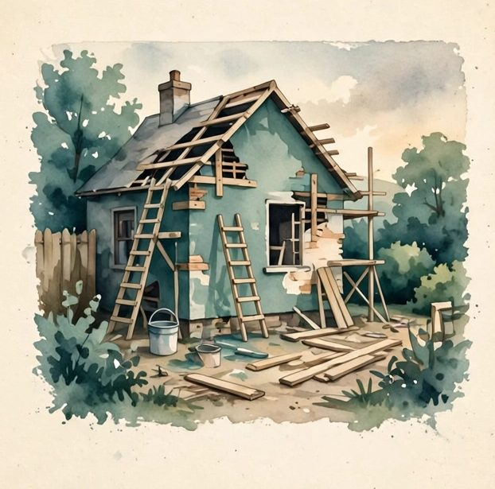
A house stands under repair, ladders and planks about it, one wall already freshly painted.
The house in the plate is half wrapped in its own repair: ladders against the wall, planks stacked by the door, one wall already freshly painted and drying in the sun while the other three wait their turn in honest shabbiness. A visitor from a grander world might read the scene as failure. The keeper reads it as the town's philosophy standing in the open. Houses here are built to be repaired — which is to say, built on the assumption that time is real, weather is real, and the people who will do the mending are not yet born.
Built to be repaired means decisions taken at the drawing board for hands that will come later. Beams are sized so one person can replace them. Paint is honest paint that can be matched at the corner shop in twenty years, not a miracle finish that peels in sheets. The roof's way of coming apart is known and documented in the house's own book, left in the kitchen drawer by the builder, with the well's quirks and the orchard's lease. Nothing is sealed against its own future. Even the walls are plastered to be replastered, in the local mix, by local hands.
The consequence is a town that never looks finished and never looks abandoned, which the register offers as the correct appearance of a living place. Scaffolding is a normal sight, like laundry. A house's age shows as a history of care rather than a countdown to ruin, and its value is partly the accumulated mending — the grandfather's gutter, the mother's doorstep, your own first wall, painted slightly the wrong color and loved for it. The ladder comes down at dusk. Tomorrow it goes up again, somewhere else on the street, forever.
69Gardens Between the Houses
Between the houses, where a more efficient world would have put a wall or a road, this one puts gardens: long strips of worked earth running down behind the street, beans on their poles, currant bushes marking the boundaries more honestly than fences, a path worn down the middle of each by the feet of its household. The keeper walks them at the hour when the work is done and the watering begins, and considers the arrangement one of the blueprint's quiet triumphs. The town feeds itself, in part, from the gaps in itself.
The gardens do more work than the food accounts for. They give the houses a second face, the working face, turned away from the street's manners — the face with the compost heap, the rain barrel, the bench where the day's real thinking gets done among the rows. Neighbors meet there in their oldest clothes, over the boundary bushes, and the conversations held at that altitude of honesty hold the street together better than any council. A garden is also a calendar nobody has to be taught: it announces the year to everyone who passes, in green, then in fruit, then in frost.
The blueprint protects the strips against the town's own growth, and the protection is entered as a near-law. A house may be rebuilt, a shop extended, but the garden ground is not built on, because the keeper holds that a town which paves its gardens has traded its patience for floor space. So the strips run on, unglamorous and indispensable, behind the bright street — proof, renewed every season, that the space between things is not empty space. It is where the beans are. It is where the neighbors are. It is, on most evenings, where the town actually is.
70No Gates Around the Ordinary
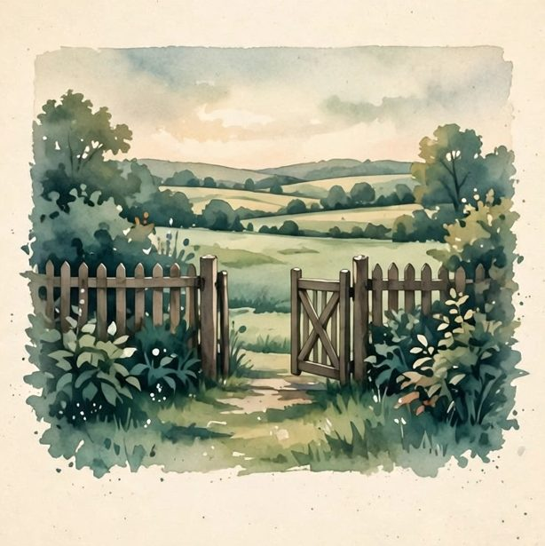
A low fence runs along the lane with a gate in it, gardens on both sides and open country beyond.
The fence in the plate is low enough to talk over and its gate is the kind that lifts with one hand, and beyond it the gardens give out, in their own time, onto open country. The keeper chose the scene to correct an expectation visitors bring from more defended worlds. There are fences here, and gates, because boundaries are honest things — but there are no gates around the ordinary. The lane, the common, the river path, the square, the shore: the everyday estate of the town stands open to the town, without ticket, key, or permission asked of anyone.
The doctrine underneath is about what a world believes its people are. A place that locks its ordinary places has announced that it expects the worst from uninvited hands, and its people, practicing for the part, often oblige. This world arranges the opposite expectation and defends it with custom rather than locks: the common tools hang in an open shed, the orchard's windfalls belong to whoever gathers them, the bench by the gate is for whoever's legs are tired. What is precious is kept carefully — the register is not naive — but precious and ordinary are kept in different categories, and the ordinary is never fenced by mistake.
So the gate in the plate is mostly a courtesy to the sheep, and its latch is the kind a child can work. People pass through it all day on the town's business and the town's pleasure, and the gardens on both sides lose nothing by the traffic except a few conversations' worth of privacy, which their owners count as income. Beyond the gate the country opens, unenclosed, to the hills. The keeper's note under the plate is short. A world is measured, he writes, by what a stranger may walk through without being stopped. Here, almost everything. Here, on purpose.
71The Night Street, Lamplit and Quiet
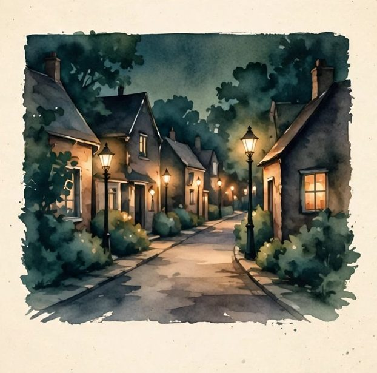
A night street lies under warm lamps and quiet houses, one window still lit along the row.
The last street of the hall is the same street at night: lamps warm along the lane, houses quiet behind their shutters, one window still lit where somebody reads, or nurses, or simply prefers the world's edge of the day. The keeper walks it on his rounds and reports the same finding every night of the year. The town does not become a different town after dark. It becomes this one, at lower volume — and the blueprint, which planned the lamps before it planned anything ornamental, counts that as a triumph of the same order as the square.
The lamps are spaced for walking, not for spectacle: close enough that the pools of light nearly touch, lit at the hour the light fails, kept by a lamplighter whose round is the town's oldest job and its most trusted. Under them the night's small population goes about its business — the watchman, the baker starting his long kindness, lovers taking the long way home on purpose, an old person sitting out for the cool of it. Nobody hurries. A street that feels safe at walking pace in the dark is a street whose day was built correctly.
The quiet itself is the keeper's subject in the margin. It is not emptiness; it is the sound of a town at rest with its doors unbarred, dogs asleep in the yards, the mill wheel turning somewhere off in the dark at its night pace. The one lit window goes dark. The lamps burn on at their stations, spending the town's oil on the town's peace of mind, and the register closes the hall of houses and streets with the night's plain inventory: every roof sound, every lane passable, every citizen home or happily not home. The world sleeps the way it lives. Openly, and at walking pace.
72A City That Fits in a Day's Walk
From the hill path above the town, on a clear morning, the whole of the place can be seen at once: wall to wall, roof to roof, the river at its feet and the orchard at its back, no part of it hidden behind any other part. The keeper ends the hall here because the view is the hall's summary. This is a city — it has its thousands, its trades, its arguments and archives — that fits in a day's walk. Its farthest door can be reached from its nearest before supper, by an ordinary person, in ordinary shoes, without machinery. That fit is not an accident of size. It is the blueprint's chosen scale.
The scale decides more than distances. A town that can be walked can be known, and a town that can be known can be governed by the governed, who can reach the council, the market, the library, and the fountain with their own legs and their own eyes. News in such a place does not need to be believed; it can be walked to and looked at. Even the keeper's authority depends on the scale: his world fits in a day's walk because his care has to, and a builder whose world outgrew his walking would have to rule it by reports, which the register counts as the beginning of every diorama.
The limit costs something, and the cost is entered without flinching. The town will never hold a million, never raise the tallest tower, never be the capital of anything but itself. The blueprint accepts the trade the way a gardener accepts the size of a garden: completely, and then gets on with making the enclosed ground as good as ground can be. Below the hill the bells begin. Smoke rises from the first chimneys. The keeper starts down toward his desk, at walking pace, through a whole world laid out in front of him like a page he is still, after all these years, allowed to read entire.
73Customs and Small Laws
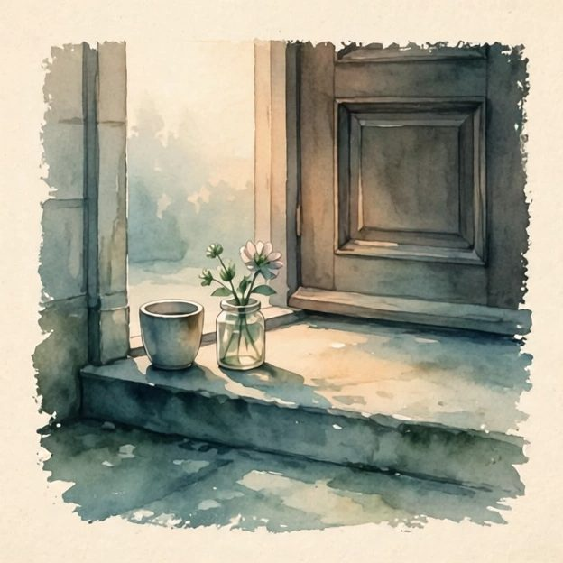
A cup stands on a doorstep at dawn, left there the evening before, beside a small flower in a jar.
On the doorstep in the plate, at dawn, stands a cup: left there the evening before by a neighbor who borrowed the keeper's ladder and took tea while returning it, and beside the cup, because the evening had been kind, a small flower in a jar. No law required the flower. That is precisely why it opens this hall. The world is held together at least as much by its customs as by its laws, and the customs are the larger country. A custom is a promise a town makes to itself so often that it stops needing to be said aloud.
The small laws come second in the hall and second in the town, which surprises visitors who expected government to lead. The laws here are few, plain, and mostly concerned with the things custom cannot carry alone: the well's upkeep, the mill's accounts, the fire watch in dry summers. Everything else — how strangers are fed, how debts of kindness are handled, how loudly a grief may be grieved — is custom's territory, patrolled by example and corrected by embarrassment. The register notes that the arrangement is not primitive. It is load-bearing, and it was chosen with open eyes.
What the hall will argue, room by room, is that the customs deserve the same care as the ground and the weather, because they are the weather of the inner life. A town's laws can be read in an afternoon. Its customs take years to learn and are learned, mostly, at doorsteps: in cups returned, greetings unhurried, mistakes repaired before they are mentioned. The flower in the jar will be noticed, appreciated, and never, ever remarked upon at length — that too is custom — and the cup will be washed and put back on the shelf by the door, ready for the next borrowing. The hall begins.
74The Law of the Returned Cup
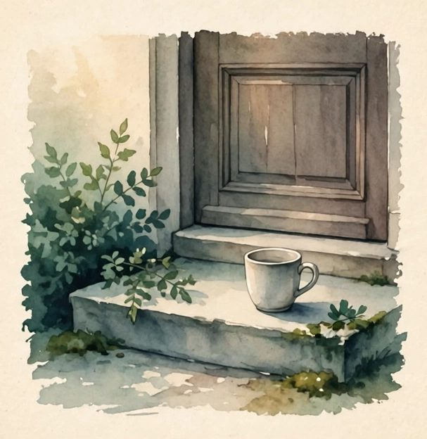
A doorstep holds a returned empty cup, washed, with a sprig of green laid beside it.
The doorstep in this plate is the twin of the last: an empty cup, returned, washed, set down squarely where its owner will find it, with a sprig of green beside it for no reason the law could state. The keeper calls the arrangement the first small law, though it appears in no statute book: the law of the returned cup. What is borrowed in this world is brought back — in person, in decent condition, and where possible a little better than it left: the cup washed, the ladder's rung re-nailed, the book's torn page mended with clean hands.
The law sounds like manners and functions like engineering. A town where borrowing is safe is a town that needs to own much less: one good ladder serves a street, one great kettle serves the festivals, the library's single atlas serves every schoolchild in turn. All of that sharing stands on the returned cup. Let returns become careless and the whole economy of trust quietly bankrupts itself — first the good ladder stays home, then the lending stops, then every household must buy its own, and the world is poorer by exactly the width of its suspicion. The sprig of green is not decoration. It is interest paid on trust.
Children learn the law before they can state it, which is how the register knows it is a law and not a suggestion. They watch the cup go out and come back better; they are entrusted, early, with returns of their own, and the gravity with which a seven-year-old carries a washed cup through the street is the town's constitution being exercised at its highest court. The keeper accepts returns at his own door in all weathers. He has never once, in all the register's years, had to ask where the ladder was. The doorstep stays swept. The law holds.
75Greetings Take Their Time
At the corner of the lane, where the gardens begin, two neighbors have met on their morning errands and stopped — baskets set down on the ground between them, the whole apparatus of being somewhere else temporarily abandoned — because in this world, greetings take their time. The greeting is not a toll paid at the border of a conversation. It is the conversation's foundation trench: how are you, asked as a real question; the household asked after by name; the answer waited for, all the way to its end. The errand resumes when the greeting is done, and not one breath before.
The custom costs the town measurable minutes every day, and the register has done the arithmetic and pays gladly. Those minutes are where the town's information actually lives — not in the notices on the board, but in the corner conversations: whose roof is leaking, whose mother is better, which field the rain reached. A world that greets in passing learns its own news late and secondhand. This one learns it firsthand, at walking pace, from the person it concerns. The keeper calls the corner the town's true newspaper office, and its editors are never in a hurry to close the edition.
Visitors from faster worlds find the custom hardest exactly where it is simplest: the greeting cannot be performed. An imitation greeting — the words at speed, the eyes already on the road — is detected instantly and counts, by custom, as no greeting at all, slightly worse than silence. So the baskets go down, which is the custom's whole technology: a small public surrender of urgency, repeated ten thousand times a year, until the town's tempo is set not by its fastest citizen but by its encounters. The keeper sets his own basket down. The morning widens. The lane can wait, and demonstrably does.
The Drafting Desk
One desk receives all correspondence for this house — questions, corrections, and word of any world a visitor is building: its ground, its weather, the street they are stuck on. It is read in the order it arrives, and entered in the register of unbuilt worlds.
76Festivals Nobody Sponsors
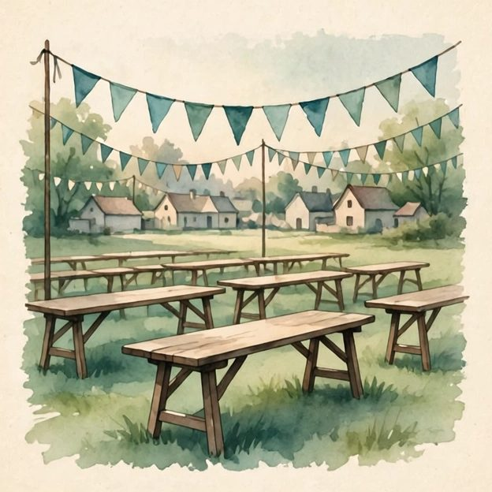
A village green lies ready in festival morning light, bunting up and long tables empty, waiting.
The green at first light on a festival morning is the plate: bunting strung between the poles, long tables set out empty and waiting, the grass still holding the night's damp, nobody yet arrived to be impressed. The keeper loves the hour because it shows who the festival belongs to. Nobody sponsors it. No name is painted on the bunting, no benefactor's generosity is announced from the steps. The festival exists because the town decided, generations back, that this day of the year would be kept — and has kept the deciding, every year since, by the simple method of everybody bringing something.
The bringing is the whole constitution. One street does the bread, another the roasting, the orchard households arrive with more fruit than the tables can hold and are teased about it by custom. There is no committee of taste and no program beyond the order the day has worn smooth: the tables fill, the old are seated first without announcement, the children orbit at their natural altitude, and somebody's uncle tells the story whose ending the whole town can recite and demands anyway. Nothing is sold on the green. A festival that can be bought, the register says, can be canceled by its buyer. This one can only be canceled by the town forgetting itself, which is a slower and more preventable disaster.
By dark the tables are cleared by the same unorganized hands that filled them, the bunting comes down for another year, and the green returns to its ordinary grazing and gossip. The keeper, walking home through it, enters the festival in the register under maintenance rather than celebration: this is how the town repairs its knowledge of itself, annually, at full length, face to face. Next year's festival is not planned. It does not need to be. It is already scheduled in the only calendar that matters here, which is the town's memory of having done it since before anyone can remember choosing to.
77Quiet Hours, Kept by Agreement
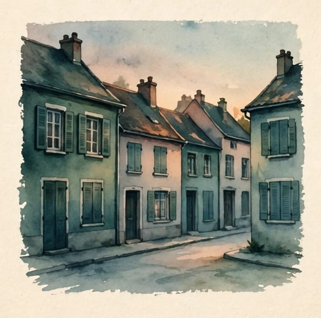
Houses settle at the quiet hour, shutters closing softly along the street in the dusk.
At the quiet hour the street performs the small ceremony in the plate: shutters closing softly, one after another, along the row — not slammed, not synchronized, just a gradual agreement of the whole street arriving at dusk like a flock settling. The quiet hours in this world are kept by agreement, which means they are kept by nobody in particular and therefore by everybody. No bell enforces them and no watchman walks for them. The town simply decided, long ago, that certain hours would be soft, and renews the decision nightly by closing its shutters at talking distance from its neighbors' ears.
The hours are placed where rest actually lives: the early afternoon in summer, when the fields themselves pause, and the long evening after the lamps, when the day's business is required to stay indoors and lower its voice. Within them, work that must make noise waits, celebrations move to the green at the town's edge, and the hammering of even the most urgent repair is done with the muffled courtesy of people who will themselves be sleeping tomorrow at that hour. The register calls the arrangement reciprocal mercy, paid forward nightly, and notes that it has never once required a fine to sustain it.
What the quiet protects is named plainly in the margin: the shallow sleepers, the very old, the very young, the ill, and the ordinary tired, which by the end of any week is everyone. A town's noise is a tax that falls hardest on those least able to pay it, and this world, which refuses most hidden taxes, refuses that one by shutter and by custom. The last shutter closes. The street exhales. In the houses, the evening goes on at its own volume, which is the volume of people who have agreed, without ever signing anything, to be quiet for each other.
78What the World Does With Mistakes
In the joiner's workshop, among the whole chairs, stands a mended one — the repair visible, a clean splice of paler wood across the back rail, unashamed among its unbroken neighbors. The keeper sends visitors to look at it when they ask what this world does with mistakes. The first thing it does is refuse to hide them. A mistake here is treated the way a mended chair is treated: as an object with a history, repaired as well as hands can repair it, and returned to service carrying its evidence openly, because the evidence is part of what the next sitter needs to know.
The practice divides, as most practices here divide, into the practical and the customary. Practically: what can be mended is mended, at the cost of the one who broke it where that is fair, and at the common cost where the breaking was honest error — the town keeps a fund for the second kind, unadvertised, because it learned that fear of the bill makes people hide breakages until they become collapses. Customarily: the misstep is spoken of plainly once, at the right table, and then retired from conversation. A mistake endlessly retold, the register says, is a mistake the town has decided to keep making on the person's behalf.
The limit is entered in the same hand as everything else here. Forgiveness is not the abolition of consequence; the spliced chair holds a lighter guest until its rail has seasoned, and everyone knows why. What the world abolishes is the second punishment, the unofficial one — the lowered standing, the permanent asterisk beside a name. The mended chair is sat in daily, by guests who are told its story without malice and sit down anyway. In the register the keeper closes the room with the town's whole doctrine on the matter: repair what can be repaired, carry what cannot, and keep no chair in the corner as a warning.
79Debts of Kindness, Never Filed
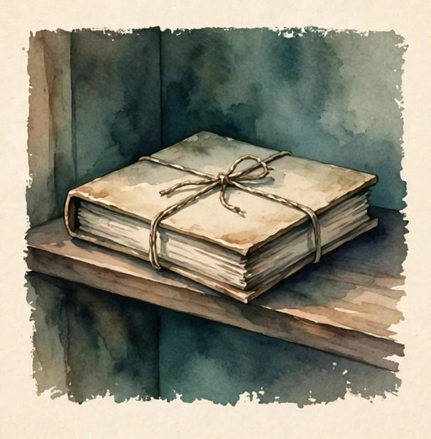
A closed ledger rests tied with string on a deep shelf, its pages of small debts long unwritten.
On a deep shelf in the keeper's office rests a ledger tied with string, closed for years, its spine faded — the book in which, in the town's early days, kindnesses were written down so that they could be properly returned. The plate is the keeper's argument in a single object. The book is closed because the practice failed, honorably and instructively. A kindness recorded becomes a debt; a debt recorded becomes an account; and an account between neighbors, kept current, turns the whole warm economy of help into bookkeeping. So the town stopped filing, and the ledger was tied with string and shelved, as a monument to a good idea that kindness could not survive.
What replaced the ledger is circulation. A kindness received here is not returned to its giver — the giver, by custom, would be embarrassed by the precision — but passed onward, to whoever stands next in need of it, at whatever size the moment asks. The basket carried for the old woman in spring is repaid, three winters later, to a stranger with a broken cart, and both parties understand the transaction perfectly and neither records it. The register can testify that the system has never once balanced, and considers that the strongest evidence it is working: a kindness economy that balances has already stopped being one.
The keeper is asked, sometimes, whether nobody keeping accounts means nobody is responsible. He unties the string, in answer, and shows the last page ever written: a column of names, a column of kindnesses, and in the margin, in the hand of the keeper of that day, the sentence that closed the book. We found we were keeping the wrong thing. What the town keeps instead is readiness — the standing habit of noticing who needs the basket carried. The ledger stays on its shelf, undusted by anyone but time. Some debts, the world holds, are best honored by never being owed.
80The Custom of the Second Helping
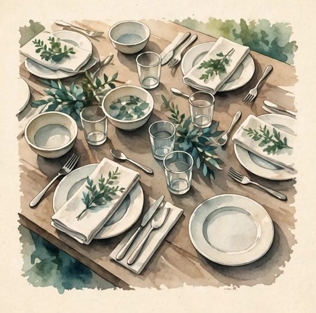
A table stands set for the meal, one extra empty plate waiting beside the full settings.
The table in the plate is set for the household and one more: an extra empty plate beside the full settings, laid without discussion, as naturally as the knives. It is the closing custom of the hall and, the keeper says, the summary of all the others. In this world, a second helping is not an indulgence to be confessed. It is a custom — of food, and of everything food stands for. What is good in the house is offered again. Nobody is required to perform gratitude for having been fed enough the first time and therefore, by arithmetic, finished.
The custom reaches past the table, as the hall's customs all reach. A second helping of time is offered to the slow worker before judgment is passed on the work. A second hearing is the town's habit with any story that arrived garbled. A second chance at the examination, the apology, the harvest dance — the world keeps a standing extra plate in each of its arrangements, laid in advance, because its people understood that a single serving of almost anything human is a ration, and rations make rationed people. The extra plate costs little. Its absence, over a lifetime, costs everything it was saving.
The keeper closes the hall with the custom's smallest and largest claim. Smallest: come back to the table; there is more; you are not a burden for wanting it. Largest: a world is known by what it offers twice. The first helping can be duty. The second is the house itself speaking. So the plate stays laid, through ordinary suppers and thin seasons alike, and the register's final entry in the hall of customs is not a law at all but a place setting — left ready, in the lamplight, for whoever at the table discovers, halfway through the meal, that they are still hungry for the world to be kind.
81Small Laws, Plainly Written
The seventh hall ends where law begins, and the keeper insists that the laws of this world be small enough to read aloud in one breath. They are written in plain sentences, pinned inside cottage doors and copied into the register's back pages, where anyone may see them. No law here runs longer than a line. None needs a commentary thicker than itself. The keeper holds that a rule a child cannot carry home in memory is a rule designed for the people who wrote it, and this world declines to be governed for the convenience of its governors.
A plain law is also an honest one, because it cannot hide. Long laws gather fog around their edges, and in the fog, exceptions breed and tempers rise. These small laws state what they mean in the words a neighbour would use across a fence. Return what you borrow. Keep the quiet hours. Leave the common path clear. A visitor reading them for the first time usually laughs at their modesty, and the keeper laughs with them, and then points out that the whole peace of the country rests on exactly such modesty, kept daily, without ceremony.
The register records very few amendments, and the keeper is proud of the shortness of that list. A law that must be revised every season was not a law but a mood. These were written slowly, tested against kitchens and harvests and funerals, and left standing when they proved able to bear the weight of ordinary life. Newcomers copy them by hand into their own books, which the keeper encourages: a law you have written out yourself, letter by letter, has a way of staying with you longer than a law you were merely handed.
82Rules the Children Can Recite
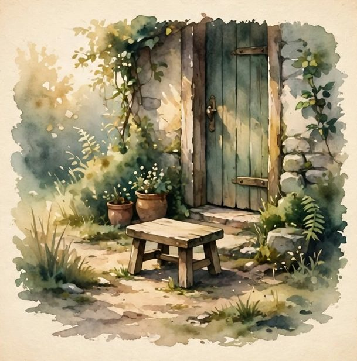
A low wooden stool for a child stands by a cottage door.
By the cottage door stands a low wooden stool, made for a child to sit on while boots are pulled off and the day is told over. The keeper chose the stool for this room because the room is about the children, and about the test every law in this world must pass before it is allowed to stand: a child of eight must be able to recite it, standing on that stool if necessary, and say what it means in words of their own. Laws that fail the recitation are sent back to the Drafting Desk, however grand they sounded.
The keeper's reasoning is plain. Children are the only citizens who will live longest under these rules, and they are also the only ones who cannot yet argue with them in council. So the rules owe them clarity. A child who can recite the law of the returned cup, and explain why the cup is returned washed, owns a piece of the country in a way no oath could give. The register notes that the children recite the laws the way they recite skipping rhymes, in chorus, with the words slightly sung, and the keeper considers this a healthy sound for a legal system to make.
It would be easy to mistake this for mere cuteness, and the house warns against the mistake. The recitation is an audit. Every year the laws are spoken aloud by the people with the least power to change them and the most years to live under them, and any law that has grown crooked in practice sounds crooked in a child's mouth. Councils have reformed statutes for less. Here, the small voice on the stool is simply the world's chosen instrument for keeping its promises legible, and the stool by the door is kept polished by small boots, ready for the next reading.
83A Custom Is a Kept Promise
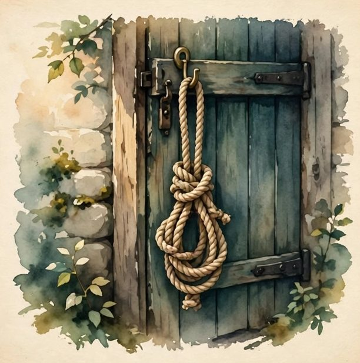
A knotted rope hangs by a cottage door, kept and polished by years of handling.
By the cottage door hangs a knotted rope, dark with years of handling, its fibres polished where hands have taken it up and set it down again ten thousand times. Nobody now remembers what the rope first held. What matters is that it is still there, and still used, and that the household reaches for it without thinking. The keeper chose it as the emblem of this room: a custom is exactly that — a promise a whole people made once, and has gone on keeping so long that the keeping itself has become the meaning.
A law can be enforced from outside, but a custom is kept from inside, by people who would feel the loss of it in their own day. When the village greets the first cart of the harvest, or leaves the last sheaf standing, nobody consults the register. The gesture was promised by grandmothers to grandchildren not yet born, and it is renewed each time it is performed, the way the rope is renewed each time a hand closes on it. The keeper writes that a custom is the longest-lived kind of promise there is, because it is the only one kept by people who never signed it.
Customs can die, of course, and the register records a few deaths without drama: a festival that thinned, a greeting that shortened, a rope that finally rotted and was not replaced. The house does not embalm them. A custom kept only because it is old is a burden wearing a costume, and this world has no use for costume burdens. The ones that live are the ones still doing quiet work — still binding neighbours, still marking the seasons, still giving the hands something familiar to reach for at the door. The polished rope hangs where it hangs because it is needed, and it is needed because it was promised.
84Laws That Fit on One Wall
In the town hall there is one whitewashed wall, and on it the whole law of the country is written, in letters large enough to read from the doorway. The seventh hall closes with this wall because it is the proof of everything the hall has claimed: that a world's rules can be few, plain, and complete, if the world is honest about what rules are for. A visitor can read the entire wall in less time than a kettle takes to boil, and the keeper has watched many visitors do it twice, the second time more slowly, looking for the trap.
There is no trap, and that is the wall's quiet provocation. Every line on it was chosen to govern a real friction — water, noise, debt, damage, the commons — and nothing was written merely to display wisdom. The gaps are as deliberate as the lines. Where the wall is silent, the country trusts custom, conversation, and the plain decency of neighbours, and the register records far fewer quarrels in the silent places than a visiting lawyer once predicted. The wall trusts its people, and a wall that trusts its people is rarely disappointed in them.
Once a year, in spring, the wall is washed and the laws are repainted by the town's steadiest hand, letter for letter, exactly as they stood. Amendments, when they come, are debated in the square and painted in public, with the old words struck through where all can see the change and remember it. Nothing is edited in the dark. The keeper says a law you can watch being repainted is a law you can believe in, and the whitewashed wall, bright every spring against the hall's old beams, is this world's whole constitution and its whole argument: keep it short, keep it visible, keep it.
85What the World Refuses
A drafting table holds one large sheet, left deliberately almost blank.
On the Drafting Desk stands a drafting table, and on it one large sheet, left deliberately almost blank: a coastline, a river, the first streets — and then wide paper, untouched. The keeper chose this sheet to open the eighth hall, the hall of refusals, because refusal begins exactly there, in the space the pencil did not fill. A builder who draws everything has decided nothing. This hall is the record of what the world, on reflection and at some cost, has decided not to have, not to do, and not to become.
Refusal is the least loved part of any building, and the keeper knows why. Drawing is generous; refusing feels like loss, and it is loss, honestly entered. Every no on this hall's list closed a door that somebody wanted opened — a quicker road, a louder festival, a taller tower than the hill. The keeper does not pretend otherwise, and the register keeps the petitions alongside the refusals, so that the cost stays visible in both directions. A world that hides what it gave up will end up giving it up again, in secret, and worse.
What the hall asks of the visitor is only to read the refusals as design, not as absence. The blank half of the sheet is not the unfinished half. It is the half where the world kept its shape — where the meadow was left a meadow because the builder finally understood that a country is made as much by what it spares as by what it raises. The sheet stays on the table, half-drawn, through all the rooms that follow. The keeper considers it the most complete page in the house.
86No World Without Cost
A balance scale, unlike stones on its pans, stands settled nearly level.
In the hall of refusals stands a balance scale, and on its pans lie two unlike stones — one smooth from the river, one rough from the quarry — settled nearly, but not quite, level. The keeper keeps the scale here as the hall's honest instrument. This room states the doctrine the whole eighth hall stands on: there is no world without cost. Every arrangement of streets and seasons and laws is paid for in something — in time, in quiet, in pleasures forgone, in the long patience of maintenance — and a builder who denies the bill is building a lie with good scenery.
The stones are unlike because costs are unlike, and that is why they never quite balance. Quiet is paid for with liveliness in one district and bought back with festivals in another. Safety costs spontaneity; freedom costs certainty; the harvest costs the winter's rest spent planning it. The scale does not call this injustice. It calls it arithmetic. The keeper's complaint is only ever against builders who hide the second pan from their visitors, who show the smooth stone and call the view complete. The register weighs both stones, in public, and writes both weights down.
None of this darkens the house, and the keeper is firm about the tone. A cost known and chosen is not a grievance; it is the shape of a decision, and people live contentedly inside decisions they understand. The discontent in the register's letters comes almost always from costs that were concealed — the promised world whose bill arrived later, in a hand nobody recognised. So this world pays openly, in advance, in the coin it has. The scale stands in the doorway of the hall so that no one walks deeper into the building without having seen the stones, both of them, nearly level, honestly weighed.
87It Refuses Hurry as a Virtue
The first refusal on the hall's list is the one visitors find hardest to forgive: this world refuses hurry as a virtue. Quickness exists here, of course — a roof is raised fast when rain threatens, a doctor walks fast when called — but speed is treated as a tool, like a sharp knife, useful in its moment and never admired for its own sake. Nobody's worth is measured by how early they arrived or how much they carried in a day. The register has no column for the fastest, and the keeper has never been asked to add one twice.
What the refusal protects is the texture of ordinary time. In this world, greetings take their time because a greeting cut short is information lost about a neighbour's health and humour. Bread is allowed to rise at its own pace, and so are apprentices, and so are decisions in council, which are deliberately slept on before they are spoken aloud twice. None of this is slowness as a performance. It is the simple recognition that most good things in a life are processes with their own clocks, and that a clock cannot be argued with, only smashed — and the smashing is recorded elsewhere, under losses.
The cost is real, and the hall enters it plainly. This world produces less per day than the hurrying countries across the border, and its letters to those countries arrive later, and some of its young people leave for a season to taste the faster weather, as young people should. Most return. What they report, in the guest book, is rarely that the fast world was wicked; it is that everything in it tasted slightly of the hurry it was made in. The village lane stays empty at dawn a little longer than efficiency allows. The keeper considers the emptiness one of the country's principal products.
88It Refuses Spectacle
An empty small stage stands in a town square, its curtains open.
In the town square stands a small stage, its curtains open, its boards swept, and on most days entirely empty. The keeper chose it for this room because the second refusal is written in its emptiness: this world refuses spectacle. Nothing here is staged to overwhelm — no towers built to be wondered at, no festivals designed to be reported elsewhere, no public moment arranged principally for the impression it will make on people who were not there. The stage is used, gladly, for plays and weddings and the children's winter pageant. It is simply never used to make the town feel larger than it is.
Spectacle, in the keeper's definition, is a moment built for its audience rather than its participants, and the register treats it as a quiet tax on honesty. A town that performs itself begins, slowly, to live at the angle of the performance: streets kept for the view, sorrows tidied out of sight, joys enlarged past recognition. This world declined the arrangement early. Its celebrations face inward, toward the people eating and dancing and being rained on together, and if a traveller happens to witness one, the traveller is handed a plate rather than a programme.
The cost stands in the register without apology. Travellers' tales of this country are famously dull in foreign taverns: good bread, quiet streets, a square with benches, weather. Nobody crosses a continent to see it, and the country has made its peace with that, the way a person makes peace with an unphotogenic face — by discovering how much life gets cheaper and kinder when it is no longer being watched. The empty stage, curtains open, boards swept, waits for the next wedding. It is not a symbol of the refusal. It is simply what the square looks like when nobody is performing, which is most of the time, which is the point.
89It Refuses a Single Story
Several open books lie fanned across a table, their pages blank.
Across the keeper's table lie several open books, fanned like a hand of cards, their pages blank — waiting, as this room waits, for more than one account. The third refusal of the eighth hall is the refusal of a single story. This world keeps no official version of itself. Its founding is told three ways in three valleys and the tellings do not agree about the weather, let alone the heroes. The register holds them all, in parallel columns, and the keeper corrects none of them, because the country decided long ago that a past with one permitted telling is a past already being used as a weapon.
The habit reaches further than history. Every quarrel in the courts here is recorded with both accounts entire, and schoolchildren learn the country's story as a chord rather than a melody — several notes, sounding together, none of them the whole music. Visitors sometimes ask which version is true, and the keeper gives the house's only answer: the chord is true. The river valley's founding is true about the river valley. The hill people's is true about the hills. A single story would be tidier, the keeper allows, and so would a country with one street and one opinion, and the world has declined tidiness at that price before.
The cost of the refusal is a certain permanent untidiness in the national memory, and arguments at festivals that end, traditionally, with both tellers buying each other soup. The gain, entered in the register in a steadier hand, is that no one here can be written out of the country by an editor. Whatever happened to you is part of the chord, and the chord is the story. The blank books on the table are the room's last exhibit: the next tellings are not yet written, and the world intends to keep room for them, in parallel, in disagreement, in peace.
90What Was Left Out on Purpose
In the keeper's room there is a shelf of jars, and in the row of jars one empty space, its dust undisturbed, where something was left out on purpose and the absence is kept swept and labelled like everything else. This room is the register of such spaces: the things this world examined, wanted in some honest part of itself, and deliberately did not build. The list surprises every visitor who reads it. There is no harbour, though the coast is fine. There is no observatory on the high hill. There is no second bridge, and the road to the border simply ends, in grass, where a generation voted that it should.
Each omission has its page, and the pages share a discipline the keeper is proud of: they record the wanting alongside the leaving-out. The harbour was wanted by fishermen who deserved one. The observatory was wanted by a schoolmistress whose name is written here in full. The world did not leave these things out because they were worthless, but because building them would have bent the country toward a shape its people, weighing the whole, chose not to live inside. A harbour would have made it a trading nation, restless and rich and hurried. The country chose to remain a farming nation with a beautiful, useless coast, and to pay for the choice in imported salt.
The empty space on the shelf is dusted around, never into, because the keeper believes an omission kept visible stays a decision, while an omission forgotten becomes a regret looking for somewhere to happen. Visitors stand before the shelf longer than before any exhibit in the hall, reading labels of things that do not exist. That, the keeper says, is the correct posture toward every unbuilt world: to know what it declined, and what the declining cost, and whose wanting was set gently aside — and to keep the space swept, in honour of the fact that they were wanted by people whose names are known.
The Drafting Desk
One desk receives all correspondence for this house — questions, corrections, and word of any world a visitor is building: its ground, its weather, the street they are stuck on. It is read in the order it arrives, and entered in the register of unbuilt worlds.
91The Shadows Are Placed Deliberately
Long tree shadows lie deliberately across a sunny garden path.
Across a sunny garden path lie long tree shadows, laid there as deliberately as the path itself was laid — the trees planted, a generation ago, at the exact distance that would stripe the walk with cool bands all afternoon. The keeper chose this path for the room of shadows because the room's doctrine is easily misunderstood. A perfect world, in the loose talk of visitors, is a world of unbroken sun. This house disagrees in writing. Shade is not the failure of light. It is one of light's instruments, and a builder who refuses to place shadows is not building a paradise; they are building a glare.
Every world, this one included, contains sorrow, diminishment, and loss, and the honest question is never whether they will exist but where they will fall and who will be standing in them. In this world the shadows were considered: rest is shaded, grief is given its quiet districts and its unhurried seasons, the sick are not hidden but housed where the light is gentle, and no citizen is required to perform brightness at noon as a condition of belonging. The register records that the country's funerals are its best-attended gatherings, which the keeper reads as a sign that the shadows here are communal property, shared, and therefore bearable.
The path is walked daily by people who step, unconsciously, from band to band — sun, shade, sun — and the rhythm of it is the room's whole argument in miniature. A life lived in stripes can be borne and even loved. A life of mandated noon cannot. So the blueprint kept its trees, at their deliberate distance, and the eighth hall counts them among the world's load-bearing structures. When visitors ask where the darkness is in this perfect country, the keeper takes them to the garden at four in the afternoon and lets the path answer: placed, proportioned, and walked through, together, on the way to somewhere sunny.
92Perfection Is Not Control
A chess board mid-game rests on a garden table, no hands near it.
On a garden table stands a chess board mid-game — a serious position, several pieces down on both sides — and no hands near it, because the players have gone in to dinner and the game will resume, or not, when it resumes. The keeper keeps the board set up through the whole season as this room's single exhibit. A perfect world, says the room, is not a controlled one. If the builder must approve every move, the country is not a world but a puppet stage, and its people are not citizens but furniture with opinions supplied from above.
The temptation the room argues against is the most respectable temptation in the whole building project: the wish to guarantee outcomes. The builder of a world wants, naturally, for nobody to be hurt, bored, betrayed, or rained on at the wrong moment, and each guarantee is purchased with the same currency — somebody's freedom to move otherwise. This world stopped buying early. It keeps its laws few and its weather unedited, and it accepts, as the price of real people, real weather, and real games, that some afternoons end badly and some positions are lost from winning ground. The register enters this not as resignation but as the definition of the thing built.
The unfinished game is the proof the keeper trusts most. Two citizens of this perfect country disagree, in public, over a board, with genuine uncertainty about who will win — and the world does not tremble. Control would have recorded the result in advance and spared everyone the suspense and the dinner conversation both. Instead the pieces stand in the evening light, mid-argument, mid-risk, mid-life. The keeper passes the table on his round and touches nothing. A world whose keeper can walk past an unresolved game without reaching for a piece has understood, he writes, the difference between building a country and playing one.
93A World That Could Disappoint You
On the keeper's desk lies a letter of complaint, three pages, closely written, answered in pencil in the margin in a patient hand. The room of disappointment keeps a file of such letters, because this world — the keeper insists on the sentence — is a world that could disappoint you. The harvest can fail in it. The festival can be rained into the hall. The person you crossed the country to see can be out, or changed, or tired of the subject you travelled with. Nothing in the blueprint indemnifies a single citizen against an ordinary bad year, and the hall regards this not as a flaw in the drafting but as the signature of the real.
A world that cannot disappoint is a world arranged as flattery, and flattery, the register notes, is a substance people can digest only in small amounts before it sickens the whole constitution. The disappointment here is of a particular kind, though, and the room is careful to describe it exactly. It is never betrayal by the blueprint: the country does not promise what it then withholds. Its rains fall on the just and the unjust with meteorological fairness, its distances stay long, its winters stay cold. What it offers instead of guarantees is company — neighbours in the same weather, institutions that tell the truth about the harvest, and a keeper who answers letters in pencil, personally, the same week.
The complainant in this case, the file shows, stayed. Most of them stay, and the keeper's marginal notes have gradually become a small literature of their own: apologies where the world was at fault, plain statements where it was not, and underneath both a steady tone that visitors describe, in the guest book, as the sound of not being managed. This world can disappoint you the way a real place disappoints — by being finite, by being weather, by being full of free people. The house offers no other kind of world, and considers the offer, stated that plainly, to be the most respectful sentence in the building.
94The Builder's Own Exile
A single chair stands on a shore, facing the sea at dawn.
On the shore at dawn stands a single chair, facing the sea, and the keeper will tell you — if you walk out with him early enough — whose chair it is. It is the builder's. Among the refusals of the eighth hall, this is the strangest and the one the register guards most carefully: the person who drafted this world did not draft a place in it. There is no palace in the blueprint with the builder's name over the door, no street exempted from the small laws for the hand that wrote them. The builder stands, by the builder's own decision, in the position of a guest at the edge of the country, looking at the water like anyone else.
The exile is not punishment, and the keeper corrects the word whenever visitors use it with pity. It is hygiene. A builder who reserves a throne inside their own design will bend every later decision toward the throne — the roads will find reasons to pass it, the laws reasons to flatter it — and the bending is invisible precisely because the builder is the one measuring. So this world's maker took the chair on the shore instead: outside the walls, under the same weather, subject when visiting to the same law of the returned cup as any traveller. The register records the arrangement without comment, which in this house means it is held sacred.
What the builder receives, in exchange for the throne, turns out to be the one thing a throne cannot give: an honest view. From the shore at dawn the country looks like what it is — a modest, working, weather-beaten place that exists independently of being admired. People build worlds, the keeper says, for the same reason they build houses: to live in them. But a world, unlike a house, is large enough to be corrupted by a resident owner. The chair stays on the shore. The builder visits, is greeted kindly, is offered soup, and sleeps in the guest room like the rest of us.
95Kept Modest on Purpose
A modest cottage stands small among tall trees.
Among tall trees stands a modest cottage, small in its clearing, its roof low, its windows few, and the disproportion is the room's whole subject. Nothing in this world was allowed to grow past the size where a person could still know its name. The towns stop at the edge of a day's familiarity. The institutions stop at the number of faces their keepers can remember. Even the register itself is one book, kept by one hand, in one room — and when a generation proposed a grander archive in a grander building, the proposal was declined in the margin with four words: kept modest, on purpose.
Modesty of scale is not modesty of ambition, and the room takes care with the distinction. The cottage among the trees is not a failure to build a castle; it is a decision about what a dwelling is for. This world wanted its life to remain legible to the people living it — its decisions reachable on foot, its rulers known by sight, its news carried by voices rather than bulletins. Bigness was available. The valleys could have held a capital, the coast a fleet, the hall a bureaucracy of keepers. Each was weighed, in the scale the visitor has already seen, and each was found to cost exactly the legibility the country existed to protect.
The keeper concedes the price cheerfully, because the hall of refusals concedes every price cheerfully: this world will never be a power, never be famous, never be described in foreign capitals as a marvel. Its maps will stay small enough to fold into a pocket. Against that, the register sets one line of profit, underlined by three generations of keepers: nothing here is too large to be repaired by the people it belongs to. The cottage stands small among tall trees, and the trees, which grew without permission to their full height, are considered by the house to be the correct comment on the matter.
96Refusals Are Part of the Blueprint
The eighth hall closes where it opened: at the drafting table, with the great sheet — only now the visitor can see what the tour has taught them to see. The blank half of the sheet is not blank. It is cross-hatched with fine lines and filled, margin to margin, with the keeper's small writing: the refusals, the omissions, the costs, the prices declined. No world without cost. Hurry refused. Spectacle refused. The single story refused. Whole coastlines of wanting, set gently aside and kept swept. The blueprint, it turns out, was never half-finished. It was drawn in two inks, and the second ink is this.
A blueprint that shows only what will be built is a salesman's document, the keeper says, and this house has no salesmen. The real plan of any world — or any life, the register adds, in its most quoted marginal note — includes the negative space, drawn with the same care as the streets. What a person refuses defines their shape as surely as what they pursue, and a world is no different: read its refusals and you know its character faster than from any avenue. The young builders who visit the Drafting Desk are always given this room last, after the pretty halls, when their enthusiasm has somewhere to stand.
So the hall ends with an instruction disguised as a description, which is the house's favourite kind. When you build — and the remaining halls assume that you will — draw the refusals in. Give them a hall of their own in the plan, with their costs entered and their petitioners' names written in full. A world honest about what it will not do can be trusted about what it will. The keeper closes the eighth hall's register, sets the great sheet back on its table under its stone weight, and leaves the blank, crowded half uppermost, where the light from the window falls on it every morning.
97Step One: Name What You Find Missing
A blank sheet is pinned to a board, a single wavy ink line across it.
Pinned to the board above the Drafting Desk is a blank sheet with a single wavy ink line across it — the keeper's record of the first attempt, kept as the ninth hall's opening exhibit. Step one of building a world, says the hall, is not to draw anything. It is to name what you find missing. Every world in the register began as a lack noticed in this one: a slowness that had gone out of the mornings, a bench that should have existed at a corner, a kindness that the arrangements kept failing to deliver. The wavy line is what honesty looks like before it learns draughtsmanship — uncertain, singular, and true.
The naming must be exact, and the room spends most of its length on the discipline of exactness. Missing is not a mood. A builder who writes down that everything is missing has written nothing, and the keeper sends such pages back, kindly, with the pencil. What is missing has a size and an address: conversations that end too early, work that cannot be seen, elders with nowhere official to be wise. Each genuine lack, named precisely, becomes a room the new world will need. Each vague ache, left vague, becomes weather the new world will import unexamined — and the register is full of beautiful countries that failed on exactly that smuggled weather.
Only when the list is finished — short, specific, and slightly embarrassing in its honesty, as true lists are — may the pencil move to ground and coastline. The keeper keeps the first sheet pinned above the desk permanently, ahead of the fine maps, as the hall's constitution: the world exists because something here was missed by somebody, by name. Visitors who skip the naming build decoration. Visitors who do it build countries, flawed and load-bearing, that answer to an actual hunger. The wavy line stays crooked. The house has never seen a straight first line it trusted.
98Step Two: Draw the Ground First
Survey stakes and bright string cross green ground at first light.
At first light the survey party goes out with stakes and bright string, and the green ground of the unbuilt country is crossed with lines that exist, for one morning, only as intention. Step two of the building, says the ninth hall, is to draw the ground first — before the streets, before the laws, before the names of anything. Ground is the one part of a world that cannot be revised by enthusiasm. Rivers will decide where the towns go whether the builder consults them or not, and soil will decide what the country eats, and the honest builder draws what the land dictates and argues afterward, like everyone else.
The temptation the room argues against is to begin with the capital — the square, the hall, the monument to the building itself — and fit the country around the furniture. The register's failed worlds are full of capitals in search of a countryside: splendid, unprovisioned, and empty by the second generation, because nobody had asked where the bread was coming from or which valley the winter came down. Ground first is boring advice, and the keeper offers it with the serenity of a man whose own world eats. Coast, plain, hills. River, soil, forest. Then, and only then, the pencil is allowed near a street.
What the step teaches, beyond geography, is order of operations as a moral habit. Begin with what you cannot change and let the changeable things arrange themselves around it honestly. Every builder who has finished this step stands, in the keeper's experience, a little more quietly before the sheet — the country has stopped being a wish and started being a negotiation. The stakes come up by noon; the string is wound and kept. The lines stay in the mind's eye all through the halls that follow, under every street and law, which is exactly where foundations belong.
99Step Three: Give It Weather
Over one half of the valley the rain is falling in grey veils, and the other half stands in sunlight, and a rainbow is doing its unhurried work between them — the keeper chose the view, and step three is written beneath it on the hall's wall: give it weather. A surprising number of the worlds brought to the Drafting Desk have none. Their skies are a permanent, mild blue, their seasons a rumour, their citizens unacquainted with mud. The keeper returns such blueprints with a single instruction, because a world without weather is not a kindness to its people. It is a refusal to let them be real.
Weather is the world's first honesty tutor. It arrives without permission, it ruins plans in public, it ends harvests and picnics with the same indifference, and it teaches a population the foundational civic skill: adjusting together. Countries with weather have neighbours who lend carts, councils that keep reserves, festivals with a plan for rain that is sometimes better than the festival. Countries without it have citizens who experience their first storm as a personal insult from the management. The step, the keeper writes, is not meteorological. It is the builder deciding, in advance, that the world will not lie to its people about what kind of place existence is.
How much weather is left to the builder's conscience, and the register records wide variation — long winters, kind ones, countries whose storms have names and anniversaries. The requirement is only that weather exist, turn, and be nobody's fault. Given weather, everything else in the building gains weight: houses are designed against something, calendars mean something, and spring, when it comes, is an event rather than a default setting. The rainbow over the valley is not in the blueprint, and the keeper mentions this every time he shows the view. Rainbows are what weather does when nobody is managing it. A built world should leave room for the same.
100Step Four: Let Other People In
A garden wall with its gate open, morning light pouring through.
The garden wall runs the length of the ninth hall's courtyard, and its gate stands open, with morning light pouring through the gap in a solid-looking stream — the step-four exhibit, chosen by the keeper with uncharacteristic obviousness. Let other people in. Up to this step, a world under construction is a private arrangement: one builder, one pencil, weather and ground obedient to the page. Step four is where the blueprint stops being a portrait of its maker and becomes a country — the moment strangers with their own mornings, opinions, and umbrellas are admitted to live in it on their own terms, not the builder's.
Everything changes, and the room does not soften the account. The people arrive with wills. They build in the street the builder left scenic, they keep hours the builder finds unwise, they tell the founding three ways and vote, in time, to move the bench the builder placed with such care. A world that cannot survive its inhabitants' freedom was never a world; it was a diorama with good lighting, and step four is the test that tells the difference. The register's surviving worlds all passed it, usually untidily, with minutes kept and feelings on record. The failed ones locked the gate at this exact step, calling the lock quality control.
The keeper's counsel is practical: let them in early, while the streets are still pencil and the laws still fit on one wall, because people admitted to a finished world can only be guests, while people admitted to a building one become founders. The light through the gate is the hall's whole theology of the matter — a world brightens when it is entered, not when it is completed. The gate stays open in the courtyard all year, through weather, unlatched. Builders visiting the Drafting Desk are walked past it twice: once on the way in, when they always smile, and once on the way out, when they understand.
101Step Five: Arrange One Ordinary Day
A table is set for an ordinary weekday meal, plain and complete.
In the middle of the hall stands a table set for an ordinary weekday meal — plain plates, a jug of water, bread, nothing festive, everything complete. Step five forbids the builder to arrange anything grander than this. Arrange one ordinary day, says the hall, from the first kettle to the last lamp, and arrange it completely: who wakes, who works, what the work is, when people eat, what the evening is defended for. A world is not its festivals. A world is the Tuesday it can sustain ten thousand times without anyone having to be inspired.
The discipline surprises builders, who arrive at the Drafting Desk with capitals and constitutions and discover they have never decided when their citizens sleep. The register's doctrine is blunt: a world whose ordinary day does not work is a poster, not a country, and it will be found out by the first actual morning. So the day is built hour by hour on the great sheet — the shape of work, the defended evening, rest built in rather than earned — and every hour that cannot be filled honestly is marked, because an unexamined hour in a blueprint becomes an unbearable one in a life.
What the finished day usually looks like, the keeper reports, is disarmingly plain: bread, work that can be seen, a meal at a real table, people unhurried in each other's company, a night street lamplit and quiet. Builders are sometimes disappointed by the plainness, expecting their world to announce itself more dramatically. The keeper sets the weekday table in front of them and asks the hall's standard question: if your people cannot be content inside this day, repeated with variations for seventy years, which day exactly were you planning to give them. The table, plain and complete, has ended more arguments than the register can count.
102Step Six: Build One Street Completely
In the model village in the keeper's workroom, one street is finished — doors hung, lamps fitted, gardens planted, a bench at the corner worn by imaginary sitters — while every street around it remains pencil lines on the sheet. Step six is the hall's correction to the most common building error: sketching everything and finishing nothing. Build one street completely, says the hall, before drawing the second. A finished street teaches the builder what a street costs — in materials, in maintenance, in the daily attention of the people who sweep it — and no quantity of sketching teaches that.
The completed street also becomes the world's measuring instrument. Every later decision is checked against it: can the country afford a hundred of these, swept, lit, repaired, and loved at this standard for a century. If not, the standard was a fantasy wearing a uniform, and it is better — the keeper underlines this — to discover the fact at one street than at a hundred. The single finished street has reduced more grand designs to honest ones than any argument in the register, simply by existing, complete, with its bench already needing a coat of varnish.
There is tenderness in the step as well, and the room does not hide it. A builder who has finished one street has somewhere in the world that is real to them at full resolution — the smell of its gardens, the sound of its gate — and that one real place anchors all the pencil around it. Imagination works at its best density in small, completed territories. The model village stays in the workroom with its single street finished for years at a time, a standing sermon in wood and paint: this much, completely, is worth more than everything, vaguely.
103Step Seven: Write Three Small Laws
A parchment sheet is ruled with three bands of abstract marks.
On the desk lies a parchment sheet ruled into three bands, filled with abstract marks where a practising hand tried out the shape of laws before daring the words. Step seven: write three small laws. Not thirty, and not the constitution — three, chosen from everything the builder has learned about their world, each one plain enough for a child to recite and strong enough to bear weight. The keeper's observation, after forty years of Drafting Desk correspondence, is that a builder who cannot choose three has not yet decided what their world is for.
The choosing is the exercise. A world's three laws are its character in miniature: the country built against loneliness writes a law about the returned cup; the country built against hurry writes its quiet hours; the country built against spectacle writes down, in so many words, what may not be staged. Every builder wants to smuggle in a fourth, and a seventh, and the register permits the whole list to exist — elsewhere. The wall gets three. The discipline is the same one the scale taught in the hall of refusals: everything costs, law most of all, because law is paid for in the obedience of free people.
When the three are written, they are read aloud in the hall, standing, the way the children will one day recite them, and the keeper listens for the sound laws make in a mouth — whether they can be said without embarrassment by the people who must live inside them. Most first drafts cannot. They come back shorter, plainer, and kinder, sometimes over several evenings, and the parchment with its three bands of marks has heard some famous improvements. The sheet stays on the desk as the step's whole curriculum: three laws, honestly chosen, are a world's spine. The rest is customs, and customs, as the seventh hall taught, grow.
104Step Eight: Decide What It Refuses
A closed garden door with a simple wreath hanging on it, in the evening.
In the evening light, a closed garden door: plain wood, a simple wreath hanging on it, and nothing about it apologising for being shut. Step eight sends the builder back through the eighth hall with a pencil: decide what your world refuses. Not in the abstract — every builder refuses cruelty in the abstract by bedtime — but specifically, with the costs priced and the petitioners named. What will travellers ask for at this gate, year after year, that the world will go on not providing. The wreath is on the door because a refusal, in this house, is not an act of hostility. It is an act of keeping.
The room insists on the ordering of the steps, and the register explains why refusals come eighth and not first. A builder who begins with refusals builds a fortress against a world they have not yet imagined; the no has nothing to protect. But a builder who has drawn the ground, given weather, admitted people, arranged the day, finished a street, and written the laws knows exactly what their country is — and can finally say, with knowledge instead of temperament, what would unmake it. Those refusals hold. The register's worlds that reversed their refusals within a generation are, without exception, worlds whose refusals were fashions rather than conclusions.
So the gate is closed in the evening, deliberately, and the keeper walks the young builder past it without hurry. Behind it is everything the previous steps built; the closing is what makes the inside an inside. The doctrine is not that a world should refuse much — this one refuses a handful of things, written on one wall — but that it should refuse consciously, keep the list visible, and re-read it every spring when the laws are repainted. A door with a wreath on it, the keeper says, is the friendliest possible shape of no: tended, seasonal, and absolutely shut.
105Step Nine: Walk It at Dusk
At dusk the workroom lamp is lit and the model village changes: the finished street glows, the pencil streets fall into a kind of honourable dark, and the keeper takes his evening walk — in imagination, at full scale — through the country he is helping to build. Step nine: walk it at dusk. Every world in the register has been walked this way by its builder before it was declared ready, and several famous blueprints did not survive the walk. Dusk is the audit no committee can perform, because dusk asks the only question that matters: what does it feel like to be inside this, when the day is over.
The walk has rules, and they are written on the hall's wall in the keeper's hand. Go slowly. Go as a stranger, not as the author — enter by the road a traveller would use, eat what the inn would serve, notice what the light does to the square. Sit on the bench your own street provides and stay until you are slightly bored, because boredom at dusk is data about the evenings you have built. The register's dusk-walk reports are the most honest documents in the building: page after page of builders discovering, in their own countries, the missing lamp, the undefended hour, the street that frightens after dark.
Nothing discovered on the walk is a disgrace, and the step is placed ninth precisely so that there is still time — three steps remain, and the blueprint is still paper. What the walk forbids is only the opposite error: declaring a world finished from the desk, in daylight, by its drawings. A country is not its map, and a day in it is not its itinerary. The keeper ends his own walk, every evening, at the same place: the shore, the builder's chair, the sea going dark. A world that still pleases its walker at that hour, in that light, may proceed to the questions of cost.
The Drafting Desk
One desk receives all correspondence for this house — questions, corrections, and word of any world a visitor is building: its ground, its weather, the street they are stuck on. It is read in the order it arrives, and entered in the register of unbuilt worlds.
106Step Ten: Ask What It Costs
A cottage at night — one window lit, one dark.
The cottage stands in the dark with one window lit and one window dark, and the keeper uses the picture for step ten the way the scale was used in the hall of refusals: as an instrument. Ask what it costs. Not once, at the beginning, as a formality — but now, at step ten, when the world exists on paper in enough detail for the question to have real answers. Who works at night in this country, and at what. Whose window is dark because they are resting, and whose is dark because their need was never entered in the plan. Every arrangement of light has a payer, and step ten exists to name them all.
The accounting the hall demands is broader than money, though it includes money, and the register's cost-pages are kept in four columns: time, attention, quiet, and the patience of the people who maintain things. A festival costs the bakers their sleep. A library costs a librarian's whole working life, gladly given and still a cost. A country with defended evenings pays in the goods the evenings might have produced. None of these entries argues against the thing purchased. They argue against purchasing it unknowingly, which is the only form of extravagance this house has ever condemned.
Builders sometimes resist the step, fearing that the arithmetic will shrink their world, and the keeper answers from forty years of ledgers: it has never once shrunk an honest one. It shrinks only the parts that were being paid for by someone the builder had forgotten to count — and a world part-paid by the forgotten is not generous; it is merely invoiced elsewhere. The lit window and the dark one, entered fairly in the book, are the step's whole blessing: a country that knows what its light costs can keep it burning without mystery, debt, or shame, for as long as its people judge the light worth the price.
107Step Eleven: Let It Disagree With You
Two chairs on a hilltop, angled away from each other toward the same valley.
On the hilltop stand two chairs, angled away from each other, both facing the same valley — the keeper's favourite piece of furniture in the whole estate, and the emblem of step eleven. Let it disagree with you. By this step the world has people, laws, weather, and several generations of momentum, and the builder faces the test that the hall of refusals prepared under the name of control: the country's considered judgement, arrived at by its own lights, will sometimes be that the builder is wrong. About the bench, about the bridge, eventually about things carved deeper. The chairs face the same valley. They do not face the same way.
The register is unsentimental about how builders receive this. Most have imagined disagreement as a problem of the early drafts, an error source that maturity would edit out. Step eleven teaches the opposite: a world that still agrees with its builder on everything, decades in, is a world whose people have not yet been allowed to think — a portrait, still. The first genuine, reasoned, courteous no from inside the blueprint is the certificate that the country has come alive, and the keeper confesses that builders, told this, tend to need a night's sleep before they can celebrate it, which the house provides without comment.
What the builder owes the disagreement is the same thing owed at every other step: honesty about whose country it now is. The laws were written to be lived under, not to be the builder's opinions with seals on. If the people, living inside the weather and the costs, judge a matter otherwise, their judgement is not a malfunction of the design; it is the design, working — freedom was the feature, and this is what the feature does on an ordinary afternoon. The two chairs stay on the hilltop, unadjusted. The keeper checks them after storms, re-angles them exactly as they were, and goes back down to the desk.
108Step Twelve: Keep the Blueprint Open
The ninth hall ends where the whole building began: at the Drafting Desk, with the great sheet still on the table at the end of the day, its corners held by stones, the pencil laid beside it rather than snapped or shelved. Step twelve is the last and the least finishable: keep the blueprint open. A world that has passed the other eleven steps — ground drawn, weather given, people admitted, a day arranged, a street finished, laws written, refusals decided, the dusk walk taken, the costs asked, the disagreement survived — is not done. It is ready to begin, which the keeper insists is a different and better condition.
Closed blueprints exist, and the register keeps a shelf of them as a warning: beautiful, complete, sealed worlds whose builders declared them perfect and forbade revision. Every one is a museum now. Their streets admit no new shop, their laws no amendment, their coasts no harbour even when the whole country, grown and changed, wants one — and a world that cannot revise itself will be revised by abandonment instead, as its people quietly leave for countries with pencils still on the table. Openness is not indecision, the hall is careful to say. The laws stand; the refusals stand. What stays open is the possibility that the world, lived in, will teach its keepers something the desk could not.
So the sheet remains under its stones, in the draught from the window, and each new keeper of this house is sworn in — there is no ceremony, only this sentence read aloud — to the keeping of an unfinished thing. Visitors ask whether the world will ever be complete, and the keeper gives the answer the twelfth step exists to give: no, and that is the completion. A world is not a product with a final version. It is a practice, renewed by the people who live in it, at a desk that is never cleared. The pencil stays beside the sheet. The sheet stays open. The country goes on being built by being lived in.
109A Guide for the New Arrival
Blank wooden arrow signs stand on a post at a crossroads, at first light.
At the crossroads at first light stands a post of blank wooden arrow signs, pointing down every road out of the junction, their boards planed smooth and waiting for the names to be painted. The tenth hall opens with them because the hall is the long view, and the long view begins with arrivals. Every world is entered, sooner or later, by someone who did not build it: a child born inside the walls, a traveller at the gate, a reader at this desk. The guide the keeper issues such arrivals is famous in the register for what it refuses to be. It is not a warning, not a sales pitch, and not a summary.
What it is, is an orientation — the small stock of knowledge a person needs in their first week. Where the water is. Which hours are quiet and must be kept. How the returned cup works, and what to do with a mistake, and where the wall of laws stands for anyone who wishes to read the whole country in the time a kettle takes. The guide assumes the newcomer is intelligent and probably tired, in the way of all arrivals, and it is written the way the stool by the door is built: low, sturdy, and at the height of the person actually arriving.
The blank signs are the guide's final lesson, and the keeper saves them for the end of the tour. The names are repainted each generation, because each generation's arrivals come from somewhere the last one did not expect, and the roads out of the junction acquire new destinations as the world grows. A guide that cannot be repainted becomes a monument, and monuments are for the finished. This country is not finished. So the signs stand ready, the brushes are kept clean, and the first light finds the junction every morning prepared to tell a stranger, accurately and kindly, where everything is — starting with the bench, the water, and the way home.
110Questions People Ask at the Desk
A desk with an open guest book of blank pages and a pen resting across it.
On the Drafting Desk lies the guest book, open at a fresh page, a pen resting across it, and the keeper counts the book among the house's working instruments rather than its decorations. People who visit the unbuilt world ask questions at this desk, and after forty years the keeper can recite the common ones the way the children recite the small laws. They are good questions. They deserve, and in this hall receive, the courtesy of being set down in the order they are actually asked, with the answers the house actually gives — which are sometimes shorter than the visitor hoped.
They ask, first, whether the world is real. The keeper answers that it is real the way a plan for a house is real: it exists, it can be studied, it changes what its builder does on Monday morning — and nobody should try to sleep in it yet. They ask what it is for, and the keeper says it is for seeing this world by: the imagined country is a lamp, not a refuge, and what it lights up is the arrangement of the furniture at home. They ask whether it will ever be built, and the keeper, who has answered this one ten thousand times, says that parts of it are built every day, in kitchens and councils and gardens, by people who have never heard of this desk.
They ask, last and quietest, whether their own daydream — the one they have carried privately for years — is too small, or too strange, or too late to be worth a blueprint. The register records that the keeper has never once answered yes. He turns the guest book toward them instead, and offers the pen. The question underneath all the questions is always the same: permission. The house does not issue permission, having no authority to withhold it. It issues a desk, a sheet, a lamp, and the standing invitation recorded in this book in a hundred hands: begin with the ground; the rest of us did.
111Questions Skeptics Ask, Answered Carefully
The skeptic who visits the Drafting Desk is given the good chair and a filled cup, and the keeper begins by agreeing with more of the skeptic's case than the skeptic expected. This room keeps the record of those conversations, because the hall of the long view holds that a world unable to answer its skeptics has no business answering anyone. The questions are set down fairly, in the forms their askers used, and the answers are the careful ones — the ones that concede what must be conceded before they claim anything at all.
Is this not, the skeptic asks, simply escape dressed as architecture. It can be, the keeper says; the door between imagining and escaping is real, and it swings both ways, and the house's whole doctrine exists to keep the traffic honest — a world imagined to illuminate this one is a tool, and a world imagined to replace this one is a hiding place, and the register can tell the difference by a single test. The builder who returns from the blueprint to their actual street with clearer eyes and steadier hands was imagining. The one who returns only to complain was visiting. Both are welcome at the desk. Only one is building.
Is it not, the skeptic asks, a child's exercise, drawing countries. The keeper answers that children also invented fairness, several games that outlasted empires, and the idea that strangers should be fed; the register declines to use childish as a refutation. And is it true, finally — is the world anything more than a pleasant fiction. It is a fiction, the keeper says, in the honourable sense: a made thing, made carefully, whose making makes its maker more honest about the unmade one they actually inhabit. The cups cool at the same rate throughout. The skeptic, the guest book shows, usually signs before leaving.
112What a Visitor May Take Home
A small bundle of keepsakes tied with twine, set on a doorstep.
On the doorstep of the house, waiting for the departing visitor, sits a small bundle of keepsakes tied with twine — nothing valuable, everything chosen. This room is the inventory of that bundle: what a visitor to the unbuilt world may take home. The house is generous but precise about it, because a visit can be spoiled in the luggage. What may not be taken is also listed, and the keeper reads both lists aloud at the door, in the same even tone, in any season, like a man reading the weather.
They may take the questions, which are the house's principal export: what do I find missing, named exactly. What does my ground actually dictate. Where are my costs hidden, and who is paying them in the dark. They may take the twelve steps, which fit on one card and have travelled, by post, to more countries than the keeper can pronounce. They may take the habit of the dusk walk — through their own actual street, as a stranger, sitting on their own bench until slightly bored — and the doctrine of the open gate, and the small laws, plainly written, which adapt to any household that adopts them honestly.
They may not take the country. The world itself stays here, in its register and its weather, because it was never the kind of thing that could be carried — and visitors who try to take it whole, as a ready-made answer to their own ground, find it does not survive the journey. A borrowed world fits nobody. What survives the journey, every time, is the practice: the desk, the sheet, the named lack, the counted cost. The bundle on the doorstep is small enough to carry in one hand, which is the keeper's whole theology of souvenirs. You do not leave this house with a world. You leave with the tools to build one, and the bundle is heavy enough.
113The Unbuilt World in Ten Years
A model village grown older: taller trees, mended roofs, lamps in windows.
In the workroom stands the model village as it is imagined ten years on, and the keeper, who has kept both models side by side for decades, uses the pair as this room's only text. The trees are taller — that is the first thing, and the most honest, because trees are the one part of any plan that improves itself while nobody watches. The roofs are mended rather than new. There are lamps in more windows, and the finished street has been joined, at last, by a second finished street, narrower than the first and better loved. Nothing in the ten-year model is grander. Everything in it is more settled.
The keeper warns visitors against the usual error of such projections, which is to imagine ten years as an enlargement — more streets, more people, more of everything the present has in short supply. What ten years actually does to a kept world, the register shows, is deepen rather than widen: customs that were experiments become furniture, laws that were argued become obvious, and a second generation arrives for whom the whole country is not a project but simply home, which changes the meaning of every stone in it. The builders of ten years ago become, in the model's quiet arithmetic, ancestors — consulted, quoted, and gently outvoted.
There is loss in the ten-year model, entered without flinching, as the house enters everything. A founder's house stands empty, its garden kept by neighbours. One custom has died and its rope hangs in the keeper's room as a relic. The coast road ends in grass still, though the vote was closer this time. But the sheet, the keeper notes, is still on the table, and the pencil beside it, and a young hand — not the builder's — is currently redrawing the river quarter in the evenings. The long view's whole comfort is in that hand. A world kept open is a world that survives its keeper, and survival, in the end, is the only ten-year plan that has ever worked.
114Every World Begins as Someone's Daydream
On a bench outside the schoolhouse lies an exercise book left open, its margins full of small careful drawings — houses with smoking chimneys, a river doing unlikely things, a tower that would fall down in any honest wind. The keeper passes it daily and has never once tidied it away, because this room's doctrine is written in those margins. Every world begins as someone's daydream. The country in the register, with its laws and costs and dusk audits, began exactly here: as an idle picture drawn by a person whose attention had wandered, in an unguarded hour, from the task in front of them.
The house is protective of daydreams, and the register explains the policy without embarrassment. A daydream is the only stage of building that cannot be done wrong, because nothing is yet being claimed — no costs counted, no promises made, no people admitted. It is imagination at its freest and therefore at its most honest; what a person pictures, undefended, in the margin of an ordinary afternoon, is a true report of what they find missing, filed before step one even has a name. The keeper distrusts builders who claim their worlds began as research. He trusts the ones who confess to margins.
All the same, the room is not a licence to stop at the margin, and its second half is a gentle argument with the dreamers, one of whom the keeper counts himself. A daydream kept private for forty years is not a world; it is a keepsake, and the house has a shelf for those too, dusted and respected and slightly sad. The difference between the keepsake and the country is nothing more exalted than the twelve steps: the naming, the ground, the weather, the people, the pencil. The exercise book will be picked up at the end of the school day. What its owner does with the margins in the years that follow is, the keeper writes, the whole biography of every world there is.
115Failure Modes, Listed Calmly
Tools lie in a calm row on a bench, one of them cracked.
On the workbench lie the builder's tools in a calm row — square, mallet, level, pencil — and one of them is cracked through the handle, kept in the row rather than discarded, because this room is about failure and the cracked tool is its honest emblem. The tenth hall lists the failure modes of unbuilt worlds calmly, the way a good manual lists them: not to frighten the builder, but because a failure named in advance loses most of its power to ambush. The register has watched worlds fail for forty years. The ways are few, and they repeat, and they are set down here in order of frequency.
Worlds fail, first, by sealing: the blueprint closes, revision stops, and the country becomes a monument to its founding generation, defended against its own grandchildren. They fail by smuggling — vague aches imported as weather, unexamined costs invoiced to the forgotten, promises painted on the gate that the interior never agreed to keep. They fail by theatre, when the builder begins designing for visitors instead of inhabitants, and the streets grow photogenic and unliveable in equal measure. And they fail, most quietly, by loneliness: the gate never opened at step four, the people never let in, the perfect country standing complete and uninhabited, its keeper dining alone in a hall built for hundreds.
Against each mode the register sets the same unglamorous maintenance the whole house runs on: keep the sheet open, name things exactly, count the costs in public, build for the people inside, and let the world disagree with you before the disagreement has to shout. None of the failed worlds on the shelf lacked talent or sincerity, the keeper notes, reading the list over for the hundredth time. They lacked only the habit of returning to the desk. The cracked tool stays in the row because it still works, held carefully, and because the room's last doctrine is that failure, in this craft, is rarely a verdict. It is usually just a handle, waiting to be noticed before the next swing.
116What the Keeper Does All Day
A keeper's desk at midday: register open, lamp off, a cup of tea gone cold.
The keeper's desk at midday: the register open, the lamp off because the room is bright, a cup of tea gone cold because the morning's letters ran long. Visitors sometimes ask, with real curiosity, what the keeper of an unbuilt world does all day — the country being imaginary, the desk being small, the tea being cold. This room is the answer, and the keeper requested it himself, on the grounds that the long view should include the view of the desk. His day, set down plainly, is the least mysterious document in the building.
He answers letters. That is the first item and the largest: builders write from every stage of the twelve steps, and the replies are written by hand, in the margins of their own pages where possible, because advice about a person's world should arrive attached to the world. He walks the model village, the shore, and the one finished street of his own attention, checking the small machinery of the house: the gate unlatched, the wall of laws legible, the scale's stones undisturbed. He keeps the register — entries in a steady hand, costs entered the day they are discovered, refusals repainted in spring along with everyone else's.
And in the afternoons, most days, he builds a little. Not this world — this world is finished being his to build, and others keep it now — but a private sheet of his own, a small country in early pencil, ground first, weather pending. It surprises visitors to learn that the keeper is a beginner again at his own desk, and it does not surprise him at all. The practice was never the property of the finished. The tea goes cold most days, and he drinks it cold, and the register records the fact without symbolism: a keeper's day is letters, walks, entries, and an hour of honest pencil. The unbuilt world is kept the way anything real is kept — daily, and mostly before lunch.
117A Note from the Keeper of the Unbuilt World
I keep this house, and before the fine print in the next room says the formal part, I want to say the plain part in my own voice. I am not the author of the world in these halls, whatever the register's neatness suggests. I am its clerk. The country was dreamed by someone who took the chair on the shore and left the throne unbuilt, and everything I have shown you — the ground, the weather, the laws on one wall, the refusals with their costs — came to this desk in other people's letters and drawings, over forty years, and I entered it as faithfully as I could.
What I have learned at this desk is smaller than visitors expect and, I have come to think, better. Nobody's imagined country is really about the country. Read a hundred blueprints, as I have, and the same few longings keep arriving in different costumes: mornings that are not stolen, work that can be seen, evenings defended, a street where the old are consulted and the children can recite the rules. The worlds differ in every detail and agree in every longing, and the agreement is the most hopeful document I keep. We are not, it turns out, dreaming in a hundred directions. We are dreaming, most of us, toward the same valley, from different hills.
So I will not close this hall with an exhortation, because exhortation is not among our tools, and the twelfth step — keep the blueprint open — applies to readers as much as to builders. If you keep a sheet of your own, begin with the ground and name what you find missing, and write to this desk if the weather turns. The register has room. The lamp is lit at dusk, the kettle is on most afternoons, and the gate, you may rely on it, is unlatched. — The Keeper of the Unbuilt World.
118What This House Is, and Is Not
A plain framed sheet hangs on a wall, fine faint lines, almost blank.
On the wall hangs a plain framed sheet, its lines fine and faint, almost blank — the right frame for the fine print, which stands here, at room 118, and means every word. Building My Perfect World is a concept hall of Hi-Tech Limited Holding — a speculative project page, a design study and a working draft. It is a page for reflection and entertainment only. It is not a therapy, a psychology, or a service of any kind; it offers no diagnosis, no treatment, no method, and no advice of a clinical nature, and nothing in its rooms should be read as a substitute for the care of qualified people. A visitor who is struggling should seek people and professionals, not pages.
Nothing is sold in these halls: no product, no course, no programme, no blueprint drawn to order and no country delivered by post. Nothing is promised, either. The house does not claim that imagining a world will build one, improve one, or alter the reader's circumstances in any way whatsoever; imagination, as presented here, is not a method, not a technique, and not a key to any door in the real world. It is described in these rooms as an exercise of imagination and attention, and the house stands behind the accuracy of that description and no other. No visitor's future has been consulted in the making of this page, and none will be predicted by it.
What the house is, positively, is smaller and plainer: a set of rooms about ground, weather, people, work, and the laws a made-up country lives by, arranged by a keeper who keeps a register and answers letters. Its method, if the word is allowed at all, fits in one sentence — imagine honestly, in details, with the costs in view, and let the imagining sharpen your sight of the world you actually inhabit. Everything beyond that sentence is scenery, testimony, and an invitation to keep a sheet of paper on a desk. The house asks no more of its visitors, and it promises no more to them, than exactly that.
119Last Light Over the Unbuilt World
Last light lies over a small village, the first lamps glowing in its windows.
The last full room is kept for the last light, and the keeper spends it the way he ends every working day: looking down from the point above the valley at the country in the register, as the first lamps come on in the windows below. From here, at this hour, the unbuilt world looks the way it most truly is — not a diagram and not a dream, but a settlement of small lit rooms in a large dusk, each one containing an evening that somebody arranged and is now, provisions willing, enjoying. The laws are not visible from here. The costs are not visible. What is visible is the point of both.
A country is kept, in the end, for the sake of its evenings. All the doctrine of the halls — the ground honoured, the weather admitted, the people let in, the day arranged, the street finished, the laws kept few, the refusals kept honest — exists so that at this hour there can be lamplight in windows, soup on stoves, letters being read aloud in kitchens, and nobody performing any of it for an audience. The keeper has watched ten thousand such evenings settle over the model in his mind and the valley in his window, and the register records his conclusion without ornament: a world is good exactly insofar as its ordinary evenings are good, and by no other measure that has survived testing.
He turns for the house as the light finishes its work, with one room left after this one — the smallest, and the one every visitor walks through alone. The path down is familiar enough to walk in the dark, which is also, the keeper thinks, the correct description of a well-built world: familiar enough, at the end of the day, to walk in the dark, and lit well enough that the walking is a pleasure rather than a feat. Behind him the lamps multiply gently, window by window, in no hurry and no order, the way they have done since the first street was finished.
120Imagined Honestly, Built Patiently
The final room is the desk again, in the morning, with the great sheet open under its stones and the road beyond the window already bright — the room every visitor leaves by, and the one the keeper insists is a beginning mislabelled as an ending. The hall's motto stands at the door, and it is the whole building in six words: imagined honestly, built patiently. Honestly, because the world was drawn from what its builder actually valued, with the costs in view and the refusals on the wall. Patiently, because everything true in it was built one street, one law, one ordinary day at a time, and none of it was hurried into being a monument.
Nothing is certified at this door. The house issues no diploma of world-building, keeps no roll of finished countries, and would not know how to grade a visitor's sheet if one were handed in — the keeper's only review, offered at the threshold to those who ask, is a set of questions the visitor already knows by heart. Did you name what you find missing. Did you draw the ground first. Are the people in, and free, and able to disagree with you. The answers belong to the builder, not the house, and the register has never recorded a mark.
So the visitor walks out — past the gate that stands open, past the crossroads with its repainted signs, along the road the morning has already brightened — carrying the small bundle the doorstep provided: the questions, the steps, the habit of the dusk walk, and a pencil. Behind them, the drawers of the cabinet keep their singular things in the quiet, the sheet stays open on the table under its stones, and the keeper is already turning toward the next arrival with the same regard he gave the last. There was never a limited supply of worlds. There is only the one each person builds, honestly and patiently, starting where every world in this register started: with the ground under their own feet, and a name for what is missing.
The Drafting Desk
One desk receives all correspondence for this house — questions, corrections, and word of any world a visitor is building: its ground, its weather, the street they are stuck on. It is read in the order it arrives, and entered in the register of unbuilt worlds.